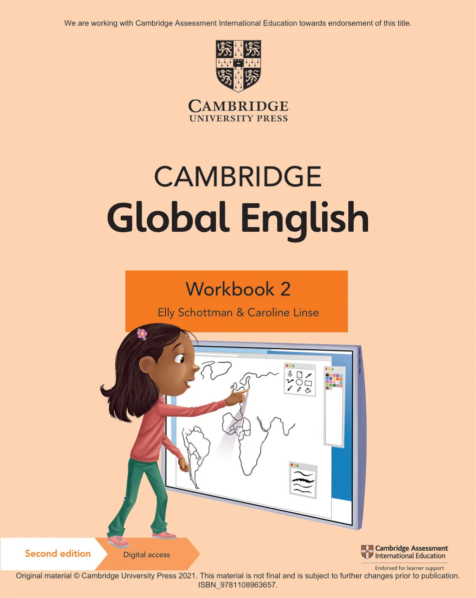
We are working with Cambridge Assessment International Education towards endorsement of this title.
CAMBRIDGE
Global English
Workbook 2
Elly Schottman & Caroline Linse
Second edition
Digital access
Original material © Cambridge University Press 2021. This material is not final and is subject to further changes prior to publication.
ISBN_9781108963657.
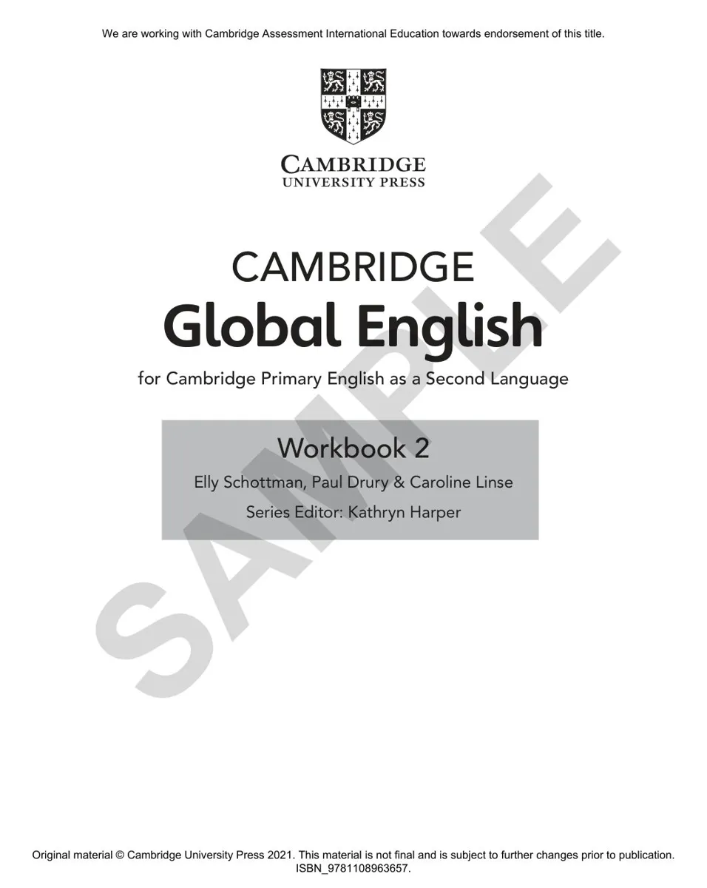
We are working with Cambridge Assessment International Education towards endorsement of this title.
CAMBRIDGE
Global English
for Cambridge Primary English as a Second Language
Workbook 2
Elly Schottman, Paul Drury & Caroline Linse
Series Editor: Kathryn Harper
Original material © Cambridge University Press 2021. This material is not final and is subject to further changes prior to publication.
ISBN_9781108963657.
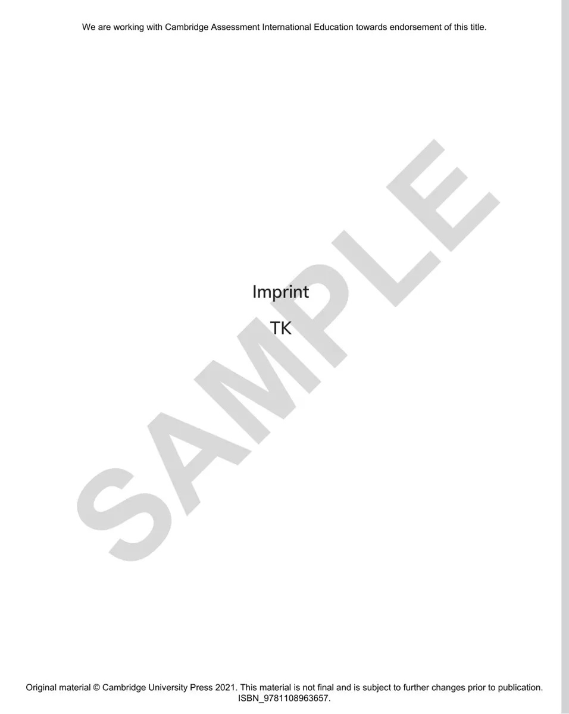
We are working with Cambridge Assessment International Education towards endorsement of this title.
Imprint
TK
Original material © Cambridge University Press 2021. This material is not final and is subject to further changes prior to publication.
ISBN_9781108963657.
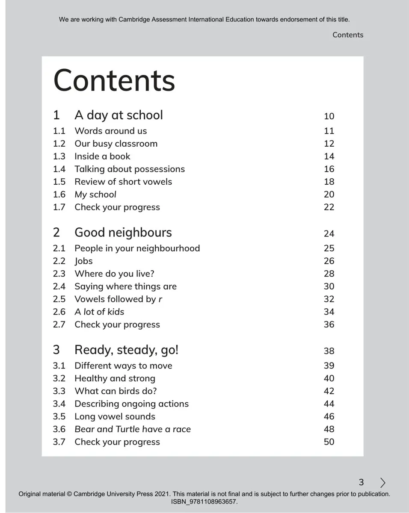
We are working with Cambridge Assessment International Education towards endorsement of this title.
Contents
Contents
1 A day at school
10
1.1 Words around us
11
1.2 Our busy classroom
12
1.3 Inside a book
14
1.4 Talking about possessions
16
1.5 Review of short vowels
18
1.6 My school
20
1.7 Check your progress
22
2 Good neighbours
24
2.1 People in your neighbourhood
25
2.2 Jobs
26
2.3 Where do you live?
28
2.4 Saying where things are
30
2.5 Vowels followed by r
32
2.6 A lot of kids
34
2.7 Check your progress
36
3 Ready, steady, go!
38
3.1 Different ways to move
39
3.2 Healthy and strong
40
3.3 What can birds do?
42
3.4 Describing ongoing actions
44
3.5 Long vowel sounds
46
3.6 Bear and Turtle have a race
48
3.7 Check your progress
50
3
Original material © Cambridge University Press 2021. This material is not final and is subject to further changes prior to publication.
ISBN_9781108963657.
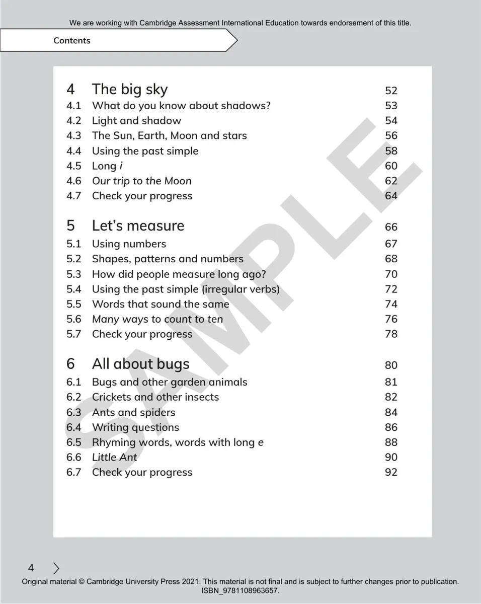
We are working with Cambridge Assessment International Education towards endorsement of this title.
Contents
4 The big sky
52
4.1 What do you know about shadows?
53
4.2 Light and shadow
54
4.3 The Sun, Earth, Moon and stars
56
4.4 Using the past simple
58
4.5 Long i
60
4.6 Our trip to the Moon
62
4.7 Check your progress
64
5 Let’s measure
66
5.1 Using numbers
67
5.2 Shapes, patterns and numbers
68
5.3 How did people measure long ago?
70
5.4 Using the past simple (irregular verbs)
72
5.5 Words that sound the same
74
5.6 Many ways to count to ten
76
5.7 Check your progress
78
6 All about bugs
80
6.1 Bugs and other garden animals
81
6.2 Crickets and other insects
82
6.3 Ants and spiders
84
6.4 Writing questions
86
6.5 Rhyming words, words with long e
88
6.6 Little Ant
90
6.7 Check your progress
92
4
Original material © Cambridge University Press 2021. This material is not final and is subject to further changes prior to publication.
ISBN_9781108963657.
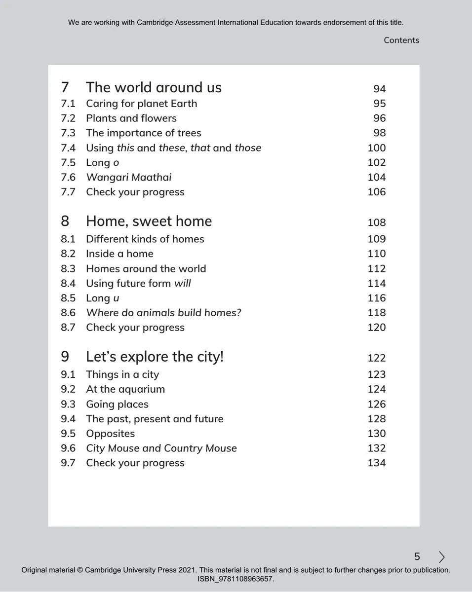
We are working with Cambridge Assessment International Education towards endorsement of this title.
Contents
7 The world around us
94
7.1 Caring for planet Earth
95
7.2 Plants and flowers
96
7.3 The importance of trees
98
7.4 Using this and these, that and those
100
7.5 Long o
102
7.6 Wangari Maathai
104
7.7 Check your progress
106
8 Home, sweet home
108
8.1 Different kinds of homes
109
8.2 Inside a home
110
8.3 Homes around the world
112
8.4 Using future form will
114
8.5 Long u
116
8.6 Where do animals build homes?
118
8.7 Check your progress
120
9 Let’s explore the city!
122
9.1 Things in a city
123
9.2 At the aquarium
124
9.3 Going places
126
9.4 The past, present and future
128
9.5 Opposites
130
9.6 City Mouse and Country Mouse
132
9.7 Check your progress
134
5
Original material © Cambridge University Press 2021. This material is not final and is subject to further changes prior to publication.
ISBN_9781108963657.
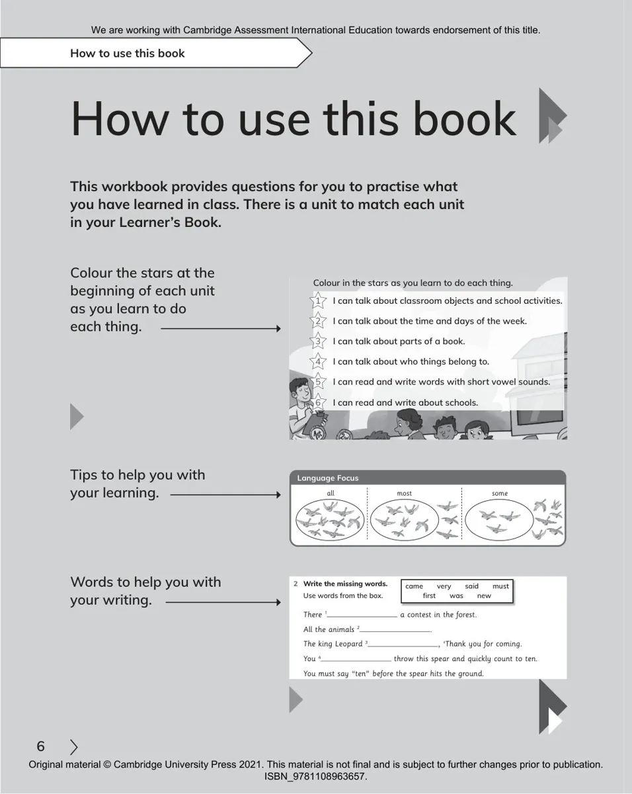
We are working with Cambridge Assessment International Education towards endorsement of this title.
How to use this book
How to use this book
This workbook provides questions for you to practise what
you have learned in class. There is a unit to match each unit
in your Learner’s Book.
Colour the stars at the
beginning of each unit
as you learn to do
each thing.
Colour in the stars as you learn to do each thing.
1
I can talk about classroom objects and school activities.
2
I can talk about the time and days of the week.
3
I can talk about parts of a book.
4
I can talk about who things belong to.
5
I can read and write words with short vowel sounds.
6
I can read and write about schools.
Tips to help you with
your learning.
Language Focus
all
most
some
Words to help you with
your writing.
2 Write the missing words.
came very said must
first was new
Use words from the box.
There 1
a contest in the forest.
All the animals 2
.
The king Leopard 3
, ‘Thank you for coming.
You 4
throw this spear and quickly count to ten.
You must say “ten” before the spear hits the ground.
6
Original material © Cambridge University Press 2021. This material is not final and is subject to further changes prior to publication.
ISBN_9781108963657.
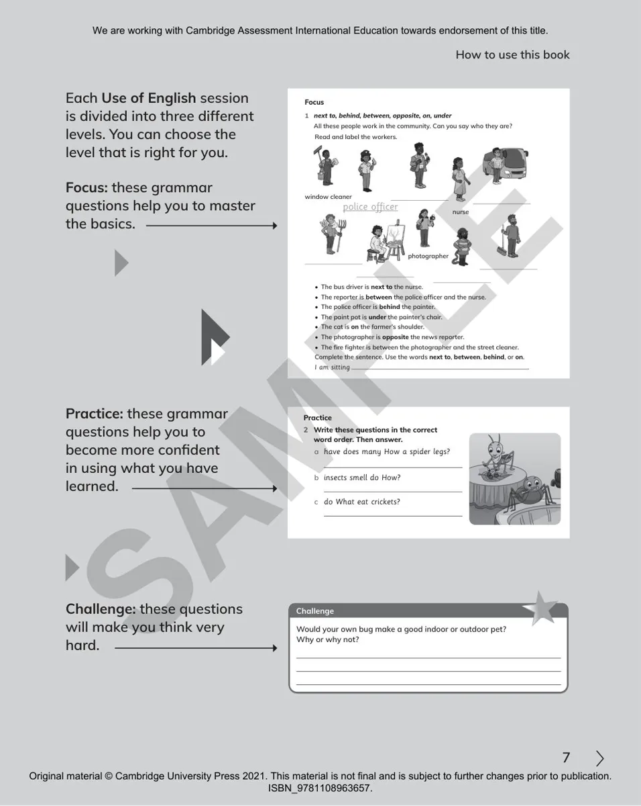
We are working with Cambridge Assessment International Education towards endorsement of this title.
How to use this book
Each Use of English session
is divided into three different
levels. You can choose the
level that is right for you.
Focus: these grammar
questions help you to master
the basics.
Focus
1 next to, behind, between, opposite, on, under
All these people work in the community. Can you say who they are?
Read and label the workers.
window cleaner
police officer
nurse
photographer
• The bus driver is next to the nurse.
• The reporter is between the police officer and the nurse.
• The police officer is behind the painter.
• The paint pot is under the painter’s chair.
• The cat is on the farmer’s shoulder.
• The photographer is opposite the news reporter.
• The fire fighter is between the photographer and the street cleaner.
Complete the sentence. Use the words next to, between, behind, or on.
I am sitting
.
Practice: these grammar
questions help you to
become more confident
in using what you have
learned.
Practice
2 Write these questions in the correct
word order. Then answer.
a have does many How a spider legs?
b insects smell do How?
c do What eat crickets?
Challenge: these questions
will make you think very
hard.
Challenge
Would your own bug make a good indoor or outdoor pet?
Why or why not?
7
Original material © Cambridge University Press 2021. This material is not final and is subject to further changes prior to publication.
ISBN_9781108963657.
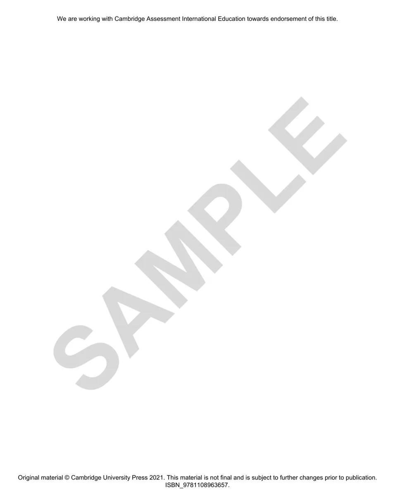
We are working with Cambridge Assessment International Education towards endorsement of this title.
Original material © Cambridge University Press 2021. This material is not final and is subject to further changes prior to publication.
ISBN_9781108963657.
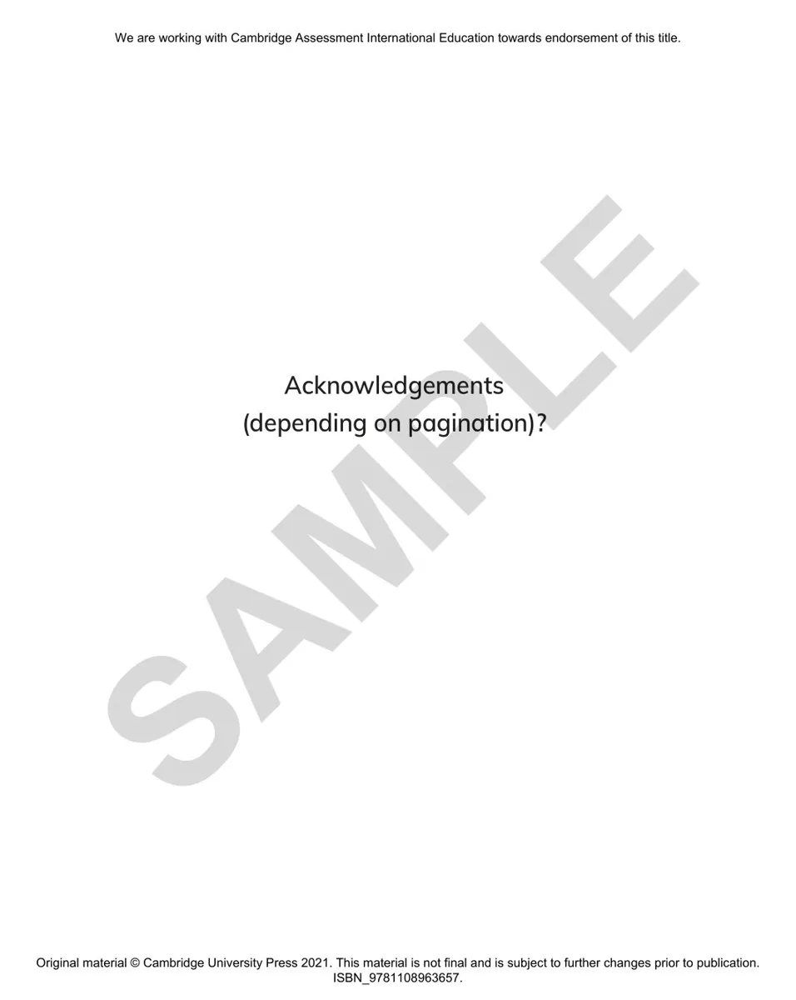
We are working with Cambridge Assessment International Education towards endorsement of this title.
Acknowledgements
(depending on pagination)?
Original material © Cambridge University Press 2021. This material is not final and is subject to further changes prior to publication.
ISBN_9781108963657.
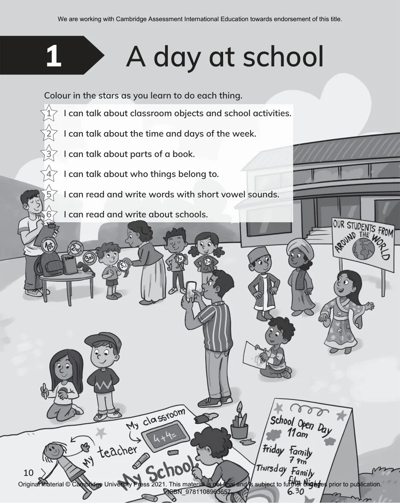
We are working with Cambridge Assessment International Education towards endorsement of this title.
1
A day at school
Colour in the stars as you learn to do each thing.
1
I can talk about classroom objects and school activities.
2
I can talk about the time and days of the week.
3
I can talk about parts of a book.
4
I can talk about who things belong to.
5
I can read and write words with short vowel sounds.
6
I can read and write about schools.
10
Original material © Cambridge University Press 2021. This material is not final and is subject to further changes prior to publication.
ISBN_9781108963657.
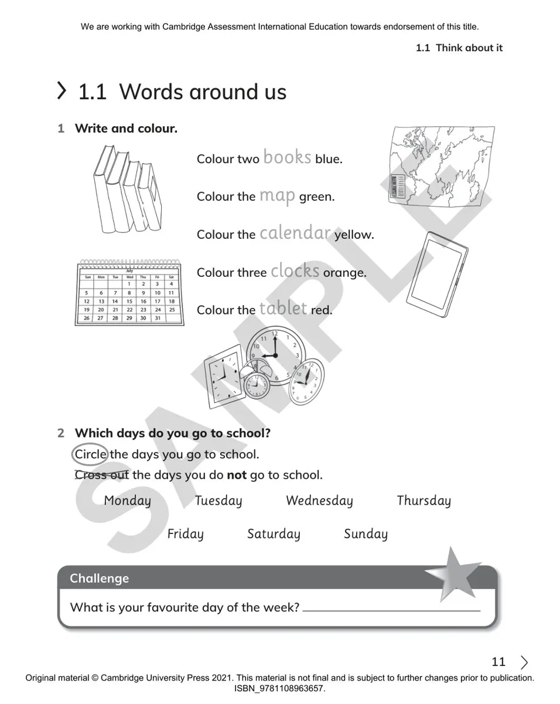
We are working with Cambridge Assessment International Education towards endorsement of this title.
1.1 Think about it
1.1 Words around us
1 Write and colour.
Colour two books blue.
Colour the map green.
Colour the calendar yellow.
Colour three clocks orange.
Colour the tablet red.
2 Which days do you go to school?
Circle the days you go to school.
Cross out the days you do not go to school.
Monday Tuesday Wednesday Thursday
Friday Saturday Sunday
Challenge
What is your favourite day of the week?
11
Original material © Cambridge University Press 2021. This material is not final and is subject to further changes prior to publication.
ISBN_9781108963657.
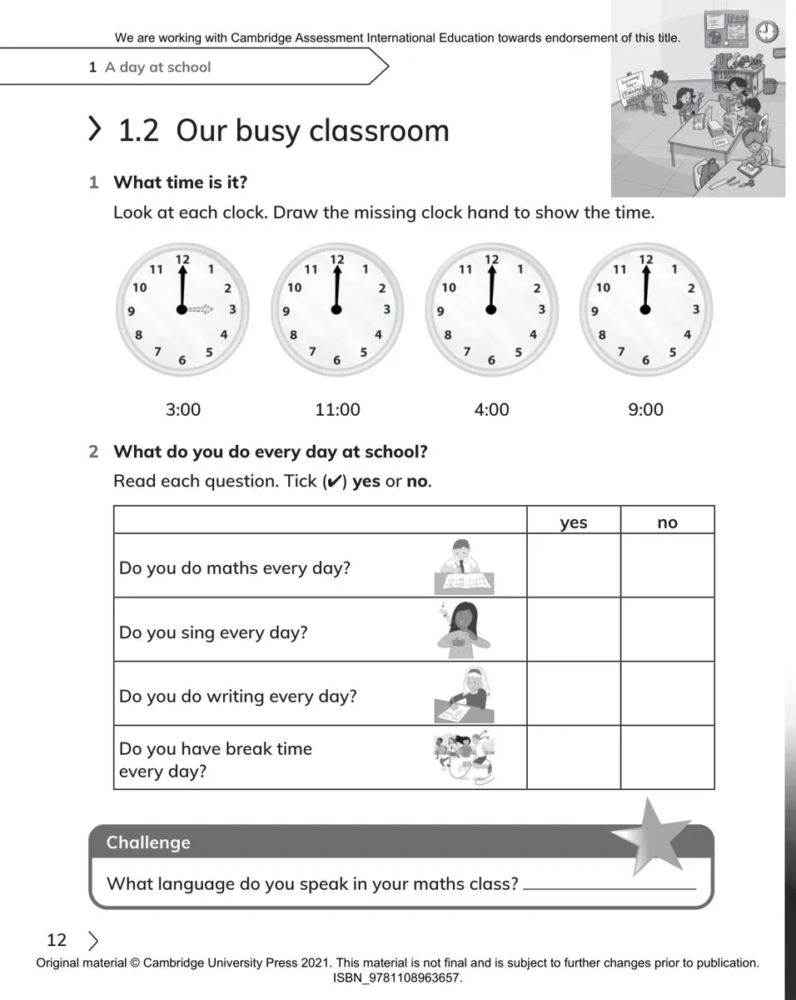
We are working with Cambridge Assessment International Education towards endorsement of this title.
1 A day at school
1.2 Our busy classroom
1 What time is it?
Look at each clock. Draw the missing clock hand to show the time.
3:00
11:00
4:00
9:00
2 What do you do every day at school?
Read each question. Tick (✔) yes or no.
yes
no
Do you do maths every day?
Do you sing every day?
Do you do writing every day?
Do you have break time
every day?
Challenge
What language do you speak in your maths class?
12
Original material © Cambridge University Press 2021. This material is not final and is subject to further changes prior to publication.
ISBN_9781108963657.
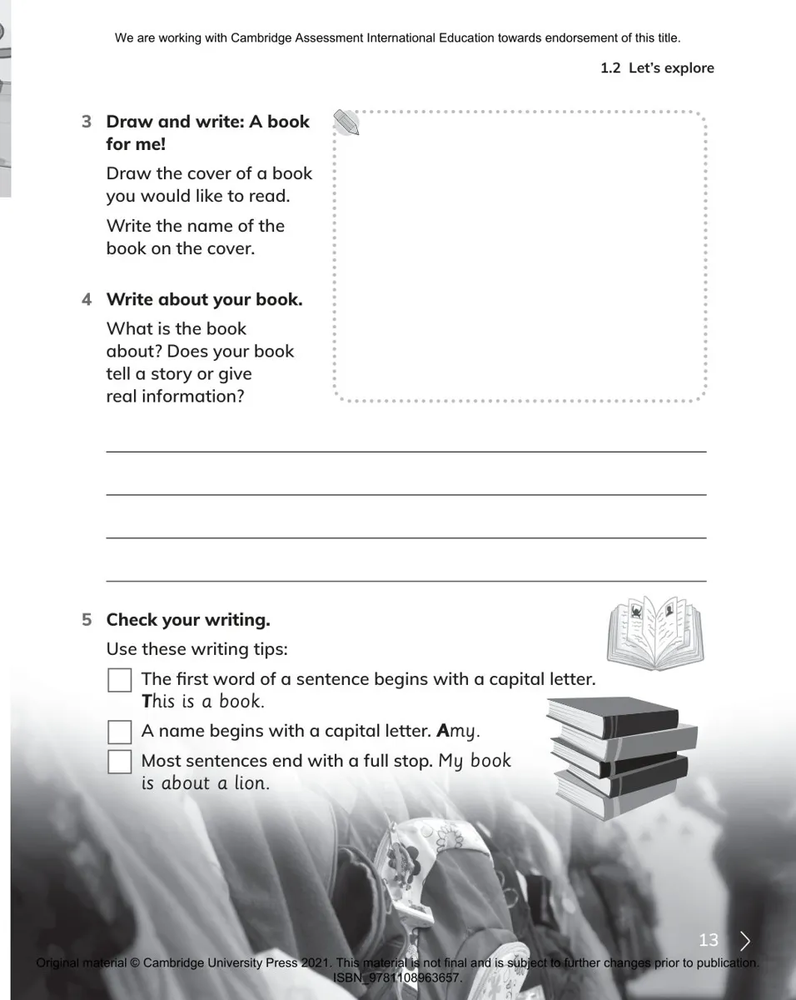
We are working with Cambridge Assessment International Education towards endorsement of this title.
1.2 Let’s explore
3
Draw and write: A book
for me!
Draw the cover of a book
you would like to read.
Write the name of the
book on the cover.
4
Write about your book.
What is the book
about? Does your book
tell a story or give
real information?
5
Check your writing.
Use these writing tips:
The fi rst word of a sentence begins with a capital letter.
This is a book.
A name begins with a capital letter. Amy.
Most sentences end with a full stop. My book
is about a lion.
13
Original material © Cambridge University Press 2021. This material is not final and is subject to further changes prior to publication.
ISBN_9781108963657.
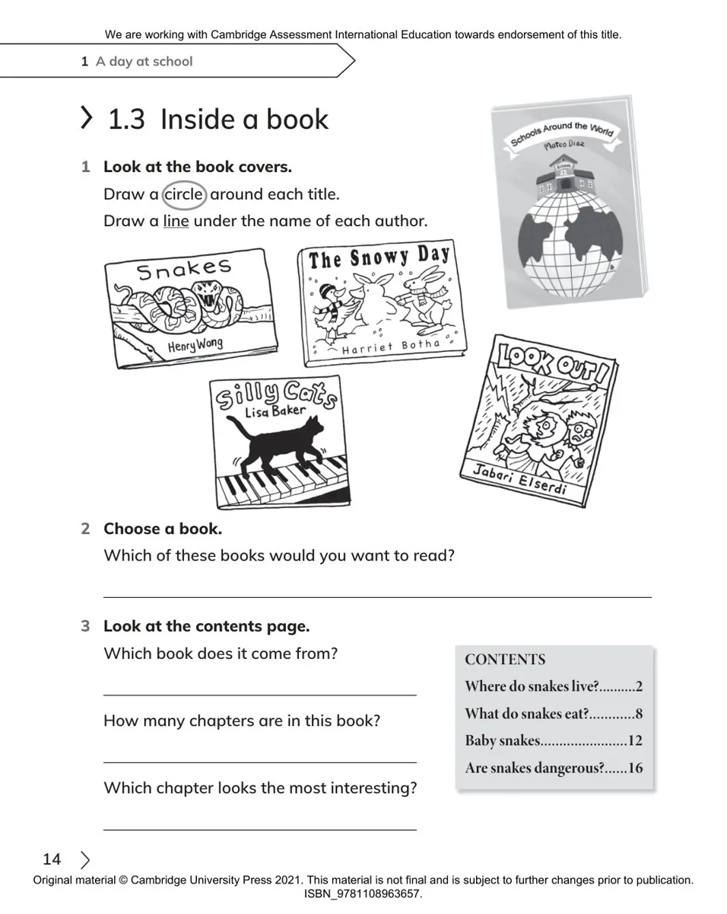
We are working with Cambridge Assessment International Education towards endorsement of this title.
1 A day at school
1.3 Inside a book
1 Look at the book covers.
Draw a circle around each title.
Draw a line under the name of each author.
2
Choose a book.
Which of these books would you want to read?
3
Look at the contents page.
Which book does it come from?
How many chapters are in this book?
Which chapter looks the most interesting?
CONTENTS
Where do snakes live?..........2
What do snakes eat?............8
Baby snakes.......................12
Are snakes dangerous?......16
14
Original material © Cambridge University Press 2021. This material is not final and is subject to further changes prior to publication.
ISBN_9781108963657.
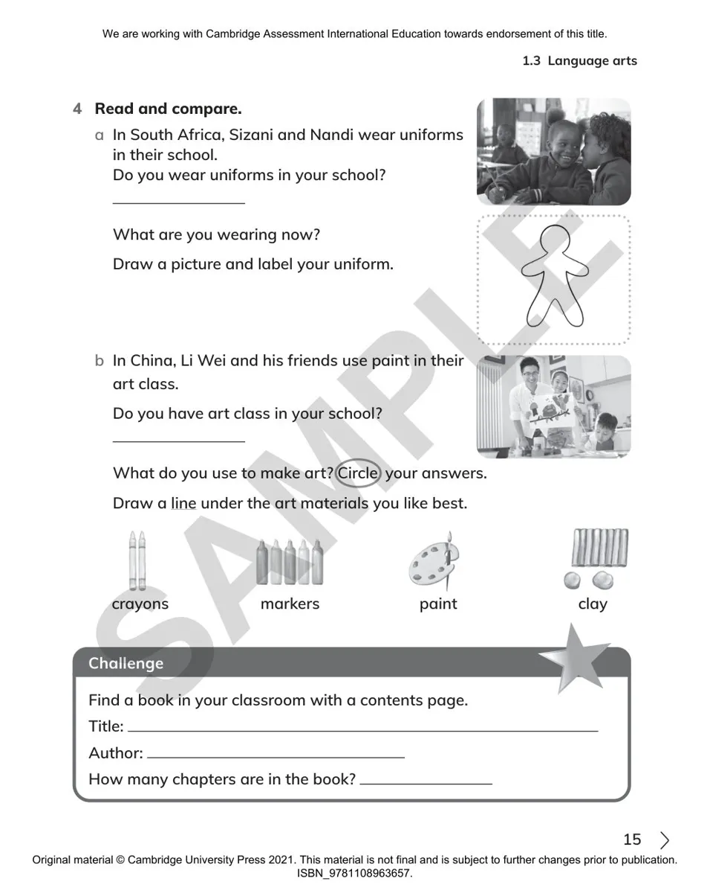
We are working with Cambridge Assessment International Education towards endorsement of this title.
1.3 Language arts
4 Read and compare.
a In South Africa, Sizani and Nandi wear uniforms
in their school.
Do you wear uniforms in your school?
What are you wearing now?
Draw a picture and label your uniform.
b In China, Li Wei and his friends use paint in their
art class.
Do you have art class in your school?
What do you use to make art? Circle your answers.
Draw a line under the art materials you like best.
crayons
markers
paint
clay
Challenge
Find a book in your classroom with a contents page.
Title:
Author:
How many chapters are in the book?
15
Original material © Cambridge University Press 2021. This material is not final and is subject to further changes prior to publication.
ISBN_9781108963657.
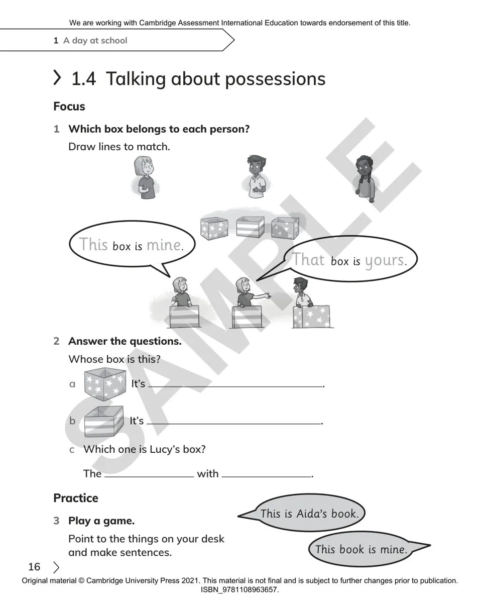
We are working with Cambridge Assessment International Education towards endorsement of this title.
1 A day at school
1.4 Talking about possessions
Focus
1 Which box belongs to each person?
Draw lines to match.
This box is mine.
That box is yours.
2 Answer the questions.
Whose box is this?
It’s
.
a
It’s
.
b
c Which one is Lucy’s box?
The
with
.
Practice
This is Aida’s book.
3 Play a game.
Point to the things on your desk
and make sentences.
This book is mine.
16
Original material © Cambridge University Press 2021. This material is not final and is subject to further changes prior to publication.
ISBN_9781108963657.
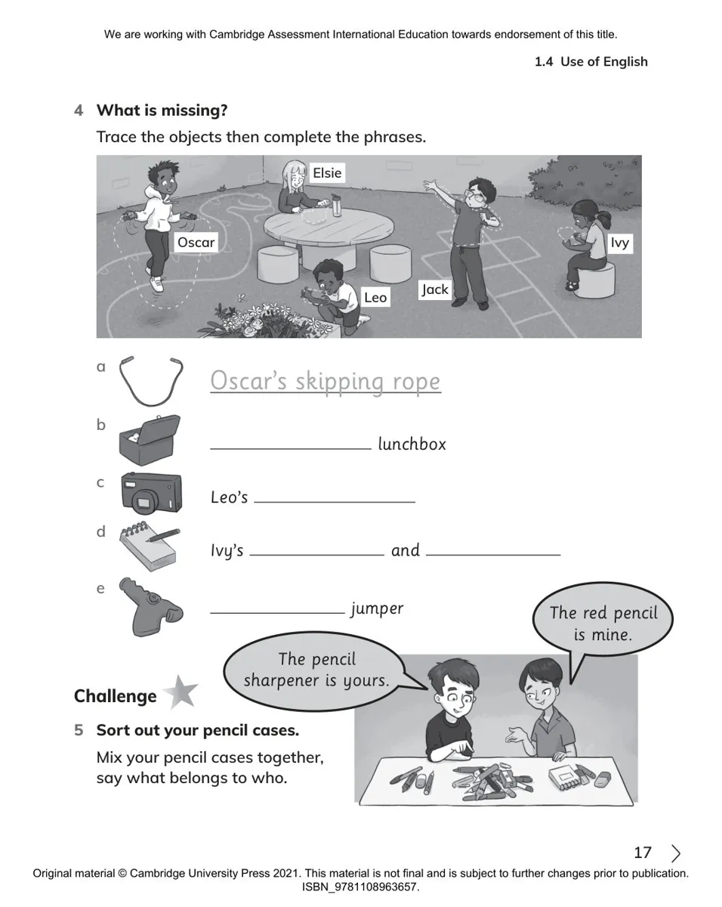
We are working with Cambridge Assessment International Education towards endorsement of this title.
1.4 Use of English
4 What is missing?
Trace the objects then complete the phrases.
Elsie
Oscar
Ivy
Jack
Leo
a
b
c
d
e
Oscar’s skipping rope
lunchbox
Leo’s
Ivy’s
and
jumper
The red pencil
is mine.
The pencil
sharpener is yours.
Challenge
5 Sort out your pencil cases.
Mix your pencil cases together,
say what belongs to who.
17
Original material © Cambridge University Press 2021. This material is not final and is subject to further changes prior to publication.
ISBN_9781108963657.
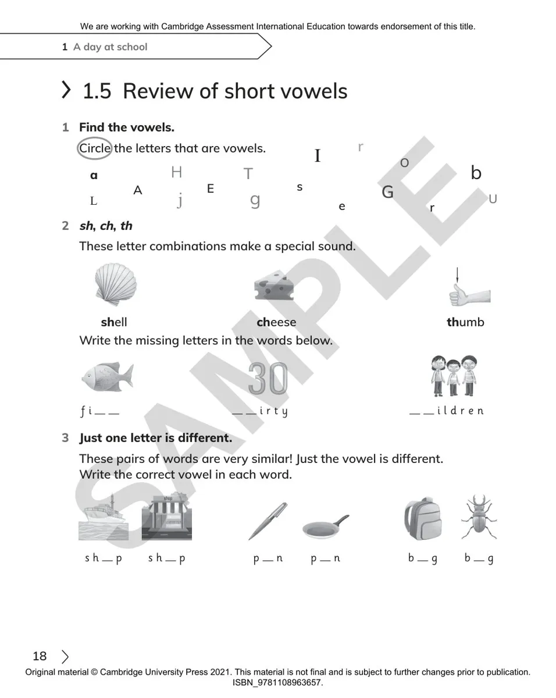
We are working with Cambridge Assessment International Education towards endorsement of this title.
1 A day at school
1.5 Review of short vowels
1 Find the vowels.
r
Circle the letters that are vowels.
I
O
b
aHT
s
e G r U
E
A
g
j
L
2
sh, ch, th
These letter combinations make a special sound.
shell
cheese
thumb
Write the missing letters in the words below.
f i
i r t y
3 Just one letter is different.
These pairs of words are very similar! Just the vowel is different.
Write the correct vowel in each word.
i l d r e n
s h
p
s h
p
p
n
p
n
b
g
b
g
18
Original material © Cambridge University Press 2021. This material is not final and is subject to further changes prior to publication.
ISBN_9781108963657.
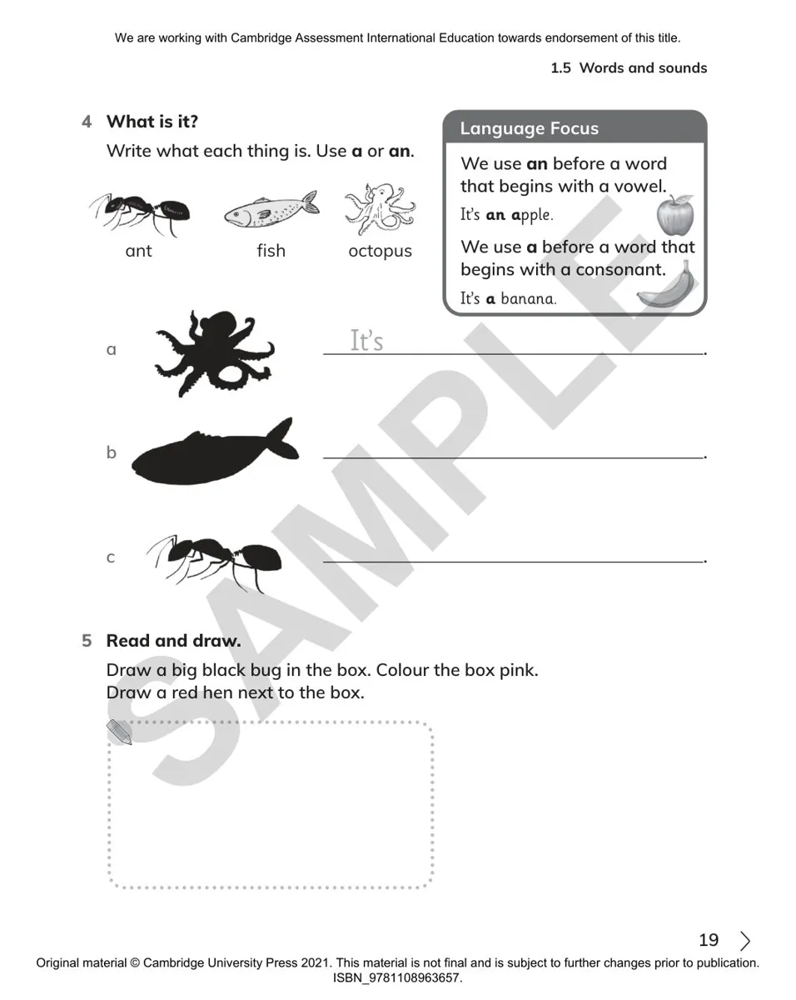
We are working with Cambridge Assessment International Education towards endorsement of this title.
1.5 Words and sounds
4
What is it?
Write what each thing is. Use a or an.
Language Focus
We use an before a word
that begins with a vowel.
It’s an apple.
We use a before a word that
begins with a consonant.
It’s a banana.
It’s
a
.
ant
fish
octopus
b
.
c
.
5
Read and draw.
Draw a big black bug in the box. Colour the box pink.
Draw a red hen next to the box.
19
Original material © Cambridge University Press 2021. This material is not final and is subject to further changes prior to publication.
ISBN_9781108963657.
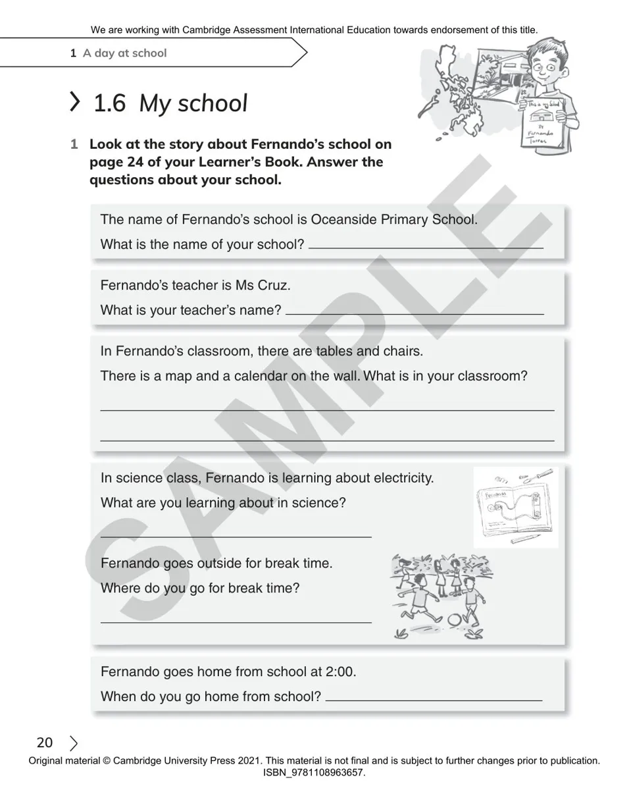
We are working with Cambridge Assessment International Education towards endorsement of this title.
1 A day at school
1.6 My school
1 Look at the story about Fernando’s school on
page 24 of your Learner’s Book. Answer the
questions about your school.
The name of Fernando’s school is Oceanside Primary School.
What is the name of your school?
Fernando’s teacher is Ms Cruz.
What is your teacher’s name?
In Fernando’s classroom, there are tables and chairs.
There is a map and a calendar on the wall. What is in your classroom?
In science class, Fernando is learning about electricity.
What are you learning about in science?
Fernando goes outside for break time.
Where do you go for break time?
Fernando goes home from school at 2:00.
When do you go home from school?
20
Original material © Cambridge University Press 2021. This material is not final and is subject to further changes prior to publication.
ISBN_9781108963657.
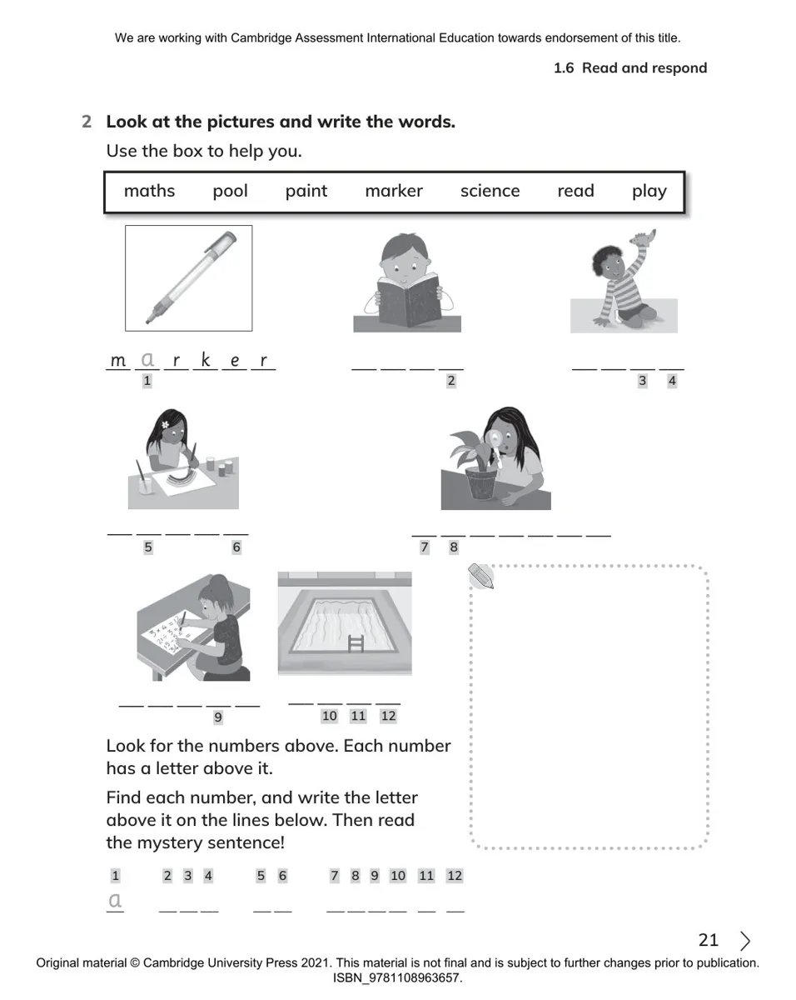
We are working with Cambridge Assessment International Education towards endorsement of this title.
1.6 Read and respond
2 Look at the pictures and write the words.
Use the box to help you.
maths pool paint marker science read play
1a
m
r
k
e
r
___ ___ ___ ___ ___ ___
___ ___ ___ ___
___ ___ ___ ___
2
3
4
___ ___ ___ ___ ___
5
6
7
8
___ ___ ___ ___ ___ ___ ___
___ ___ ___ ___
___ ___ ___ ___ ___
10
9
11
12
Look for the numbers above. Each number
has a letter above it.
Find each number, and write the letter
above it on the lines below. Then read
the mystery sentence!
1
2
3
4
5
6
7
8
9
10
11
12
a
___
___ ___ ___
___ ___
___ ___ ___ ___ ___ ___
21
Original material © Cambridge University Press 2021. This material is not final and is subject to further changes prior to publication.
ISBN_9781108963657.
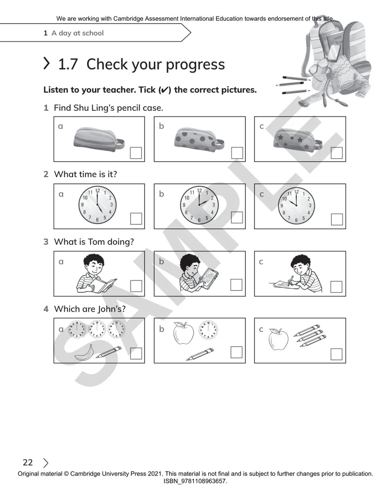
We are working with Cambridge Assessment International Education towards endorsement of this title.
1 A day at school
1.7 Check your progress
Listen to your teacher. Tick (✔) the correct pictures.
1Find Shu Ling’s pencil case.
b
a
c
2What time is it?
a
b
c
3What is Tom doing?
a
b
c
4Which are John’s?
a
b
c
22
Original material © Cambridge University Press 2021. This material is not final and is subject to further changes prior to publication.
ISBN_9781108963657.
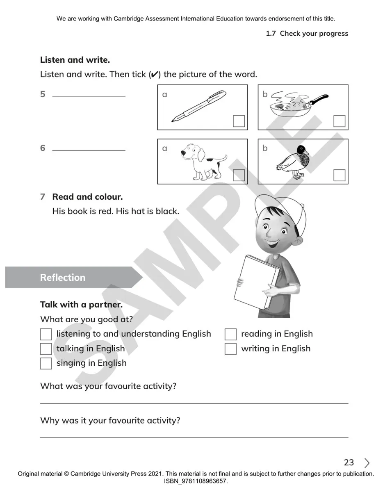
We are working with Cambridge Assessment International Education towards endorsement of this title.
1.7 Check your progress
Listen and write.
Listen and write. Then tick (✔) the picture of the word.
a
5
b
6
a
b
7Read and colour.
His book is red. His hat is black.
Reflection
Talk with a partner.
What are you good at?
listening to and understanding English
reading in English
talking in English
writing in English
singing in English
What was your favourite activity?
Why was it your favourite activity?
23
Original material © Cambridge University Press 2021. This material is not final and is subject to further changes prior to publication.
ISBN_9781108963657.
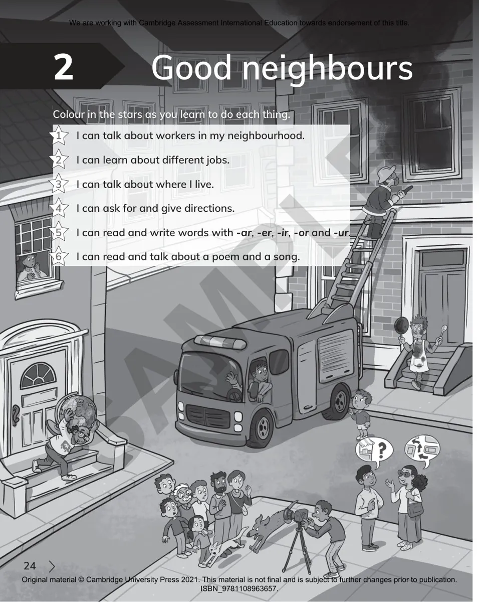
We are working with Cambridge Assessment International Education towards endorsement of this title.
2
Good neighbours
Colour in the stars as you learn to do each thing.
1
I can talk about workers in my neighbourhood.
2
I can learn about different jobs.
3
I can talk about where I live.
4
I can ask for and give directions.
5
I can read and write words with -ar, -er, -ir, -or and -ur.
6
I can read and talk about a poem and a song.
24
Original material © Cambridge University Press 2021. This material is not final and is subject to further changes prior to publication.
ISBN_9781108963657.
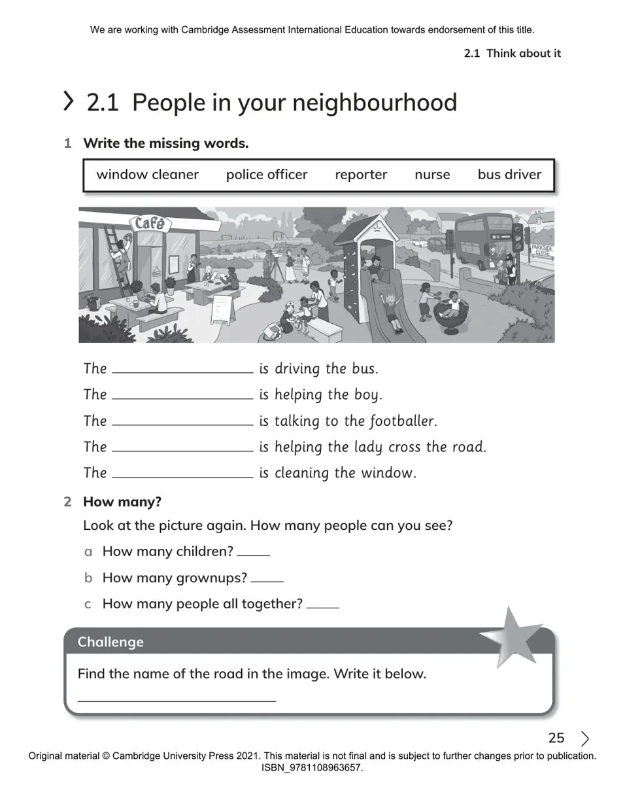
We are working with Cambridge Assessment International Education towards endorsement of this title.
2.1 Think about it
2.1 People in your neighbourhood
1 Write the missing words.
window cleaner police officer reporter nurse bus driver
The
is driving the bus.
The
is helping the boy.
The
is talking to the footballer.
The
is helping the lady cross the road.
The
is cleaning the window.
2 How many?
Look at the picture again. How many people can you see?
a How many children?
b How many grownups?
c How many people all together?
Challenge
Find the name of the road in the image. Write it below.
25
Original material © Cambridge University Press 2021. This material is not final and is subject to further changes prior to publication.
ISBN_9781108963657.
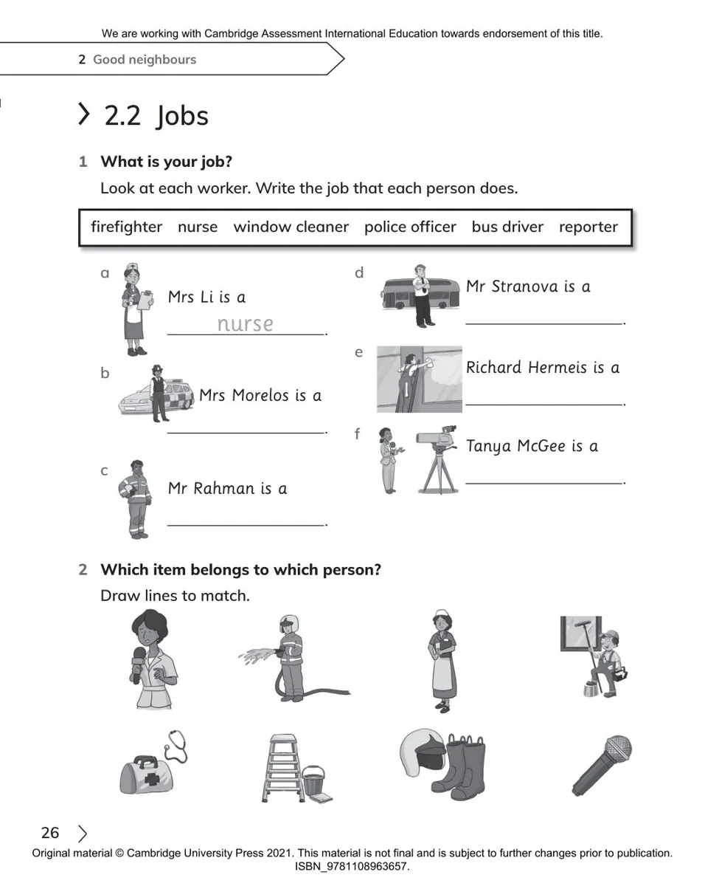
We are working with Cambridge Assessment International Education towards endorsement of this title.
2 Good neighbours
2.2 Jobs
1 What is your job?
Look at each worker. Write the job that each person does.
firefighter nurse window cleaner police officer bus driver reporter
d
a
Mr Stranova is a
Mrs Li is a
nurse
.
Mrs Morelos is a
.
.
Richard Hermeis is a
.
e
b
f
Tanya McGee is a
c
.
Mr Rahman is a
.
2 Which item belongs to which person?
aw lines t
Draw lines to match.
26
Original material © Cambridge University Press 2021. This material is not final and is subject to further changes prior to publication.
ISBN_9781108963657.
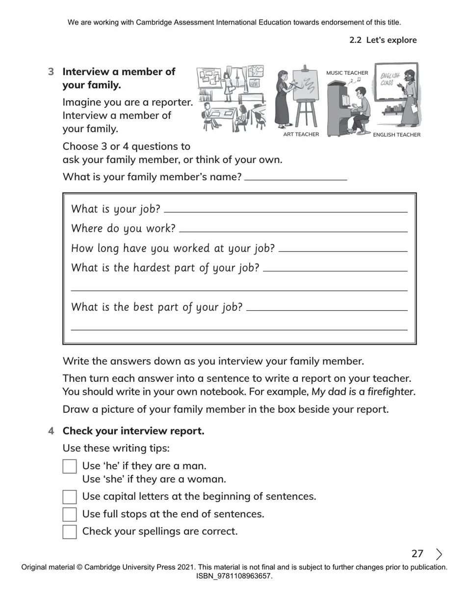
We are working with Cambridge Assessment International Education towards endorsement of this title.
2.2 Let’s explore
3 Interview a member of
your family.
Imagine you are a reporter.
Interview a member of
your family.
Choose 3 or 4 questions to
ask your family member, or think of your own.
What is your family member’s name?
What is your job?
Where do you work?
How long have you worked at your job?
What is the hardest part of your job?
What is the best part of your job?
MUSIC TEACHER
ART TEACHER
ENGLISH TEACHER
Write the answers down as you interview your family member.
Then turn each answer into a sentence to write a report on your teacher.
You should write in your own notebook. For example, My dad is a firefighter.
Draw a picture of your family member in the box beside your report.
4
Check your interview report.
Use these writing tips:
Use ‘he’ if they are a man.
Use ‘she’ if they are a woman.
Use capital letters at the beginning of sentences.
Use full stops at the end of sentences.
Check your spellings are correct.
27
Original material © Cambridge University Press 2021. This material is not final and is subject to further changes prior to publication.
ISBN_9781108963657.
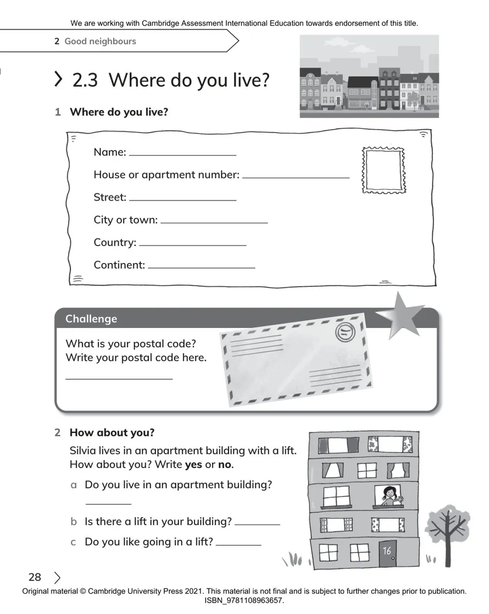
We are working with Cambridge Assessment International Education towards endorsement of this title.
2 Good neighbours
2.3 Where do you live?
1 Where do you live?
Name:
House or apartment number:
Street:
City or town:
Country:
Continent:
Challenge
What is your postal code?
Write your postal code here.
2 How about you?
Silvia lives in an apartment building with a lift.
How about you? Write yes or no.
a Do you live in an apartment building?
b Is there a lift in your building?
c Do you like going in a lift?
28
Original material © Cambridge University Press 2021. This material is not final and is subject to further changes prior to publication.
ISBN_9781108963657.
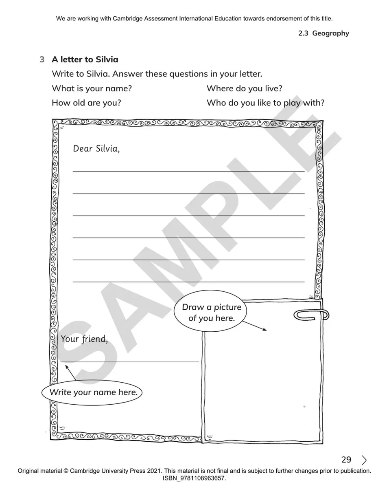
We are working with Cambridge Assessment International Education towards endorsement of this title.
2.3 Geography
3 A letter to Silvia
Write to Silvia. Answer these questions in your letter.
What is your name?
Where do you live?
How old are you?
Who do you like to play with?
Dear Silvia,
Draw a picture
of you here.
Your friend,
Write your name here.
29
Original material © Cambridge University Press 2021. This material is not final and is subject to further changes prior to publication.
ISBN_9781108963657.
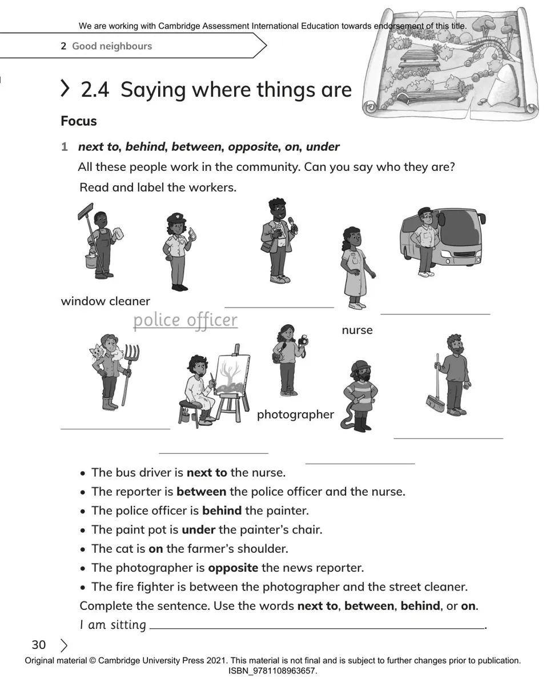
We are working with Cambridge Assessment International Education towards endorsement of this title.
2 Good neighbours
2.4 Saying where things are
Focus
1 next to, behind, between, opposite, on, under
All these people work in the community. Can you say who they are?
Read and label the workers.
window cleaner
police officer
nurse
photographer
• The bus driver is next to the nurse.
• The reporter is between the police officer and the nurse.
• The police officer is behind the painter.
• The paint pot is under the painter’s chair.
• The cat is on the farmer’s shoulder.
• The photographer is opposite the news reporter.
• The fire fighter is between the photographer and the street cleaner.
Complete the sentence. Use the words next to, between, behind, or on.
I am sitting
.
30
Original material © Cambridge University Press 2021. This material is not final and is subject to further changes prior to publication.
ISBN_9781108963657.
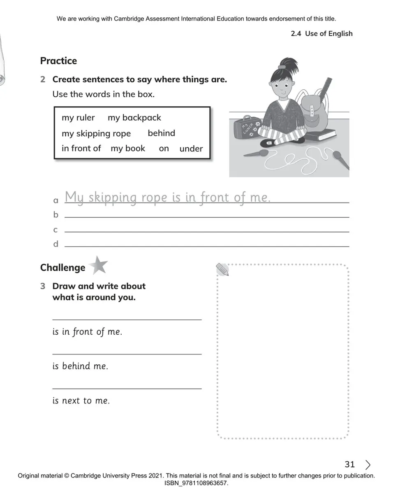
We are working with Cambridge Assessment International Education towards endorsement of this title.
2.4 Use of English
Practice
2 Create sentences to say where things are.
Use the words in the box.
my backpack
my ruler
behind
my skipping rope
on
my book
in front of
under
My skipping rope is in front of me.
a
b
c
d
Challenge
3 Draw and write about
what is around you.
is in front of me.
is behind me.
is next to me.
31
Original material © Cambridge University Press 2021. This material is not final and is subject to further changes prior to publication.
ISBN_9781108963657.
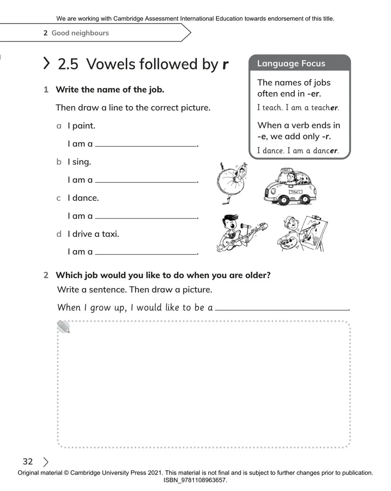
We are working with Cambridge Assessment International Education towards endorsement of this title.
2 Good neighbours
2.5 Vowels followed by r
1 Write the name of the job.
Then draw a line to the correct picture.
a I paint.
I am a
.
b I sing.
I am a
.
c I dance.
I am a
.
d I drive a taxi.
.
I am a
2 Which job would you like to do when you are older?
Write a sentence. Then draw a picture.
When I grow up, I would like to be a
.
Language Focus
The names of jobs
often end in -er.
I teach. I am a teacher.
When a verb ends in
-e, we add only -r.
I dance. I am a dancer.
32
Original material © Cambridge University Press 2021. This material is not final and is subject to further changes prior to publication.
ISBN_9781108963657.
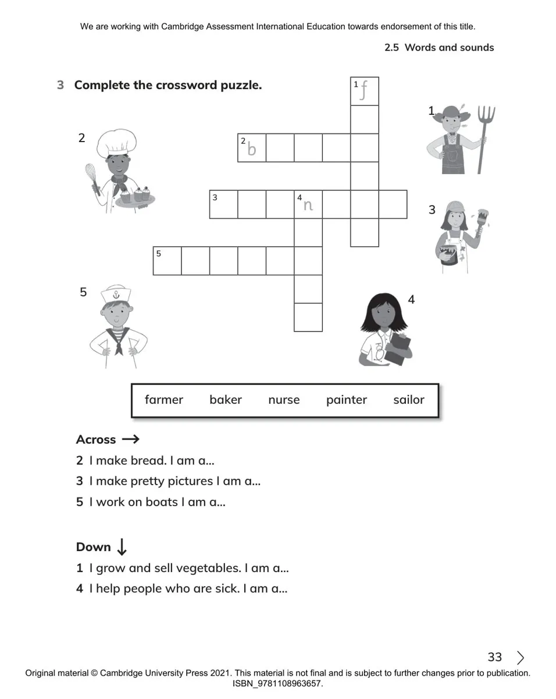
We are working with Cambridge Assessment International Education towards endorsement of this title.
2.5 Words and sounds
f
3 Complete the crossword puzzle.
2
1
1
2
b
3
4
n
3
5
5
4
farmer
baker
nurse
painter
sailor
Across
2 I make bread. I am a…
3 I make pretty pictures I am a…
5 I work on boats I am a…
Down
1 I grow and sell vegetables. I am a…
4 I help people who are sick. I am a…
33
Original material © Cambridge University Press 2021. This material is not final and is subject to further changes prior to publication.
ISBN_9781108963657.
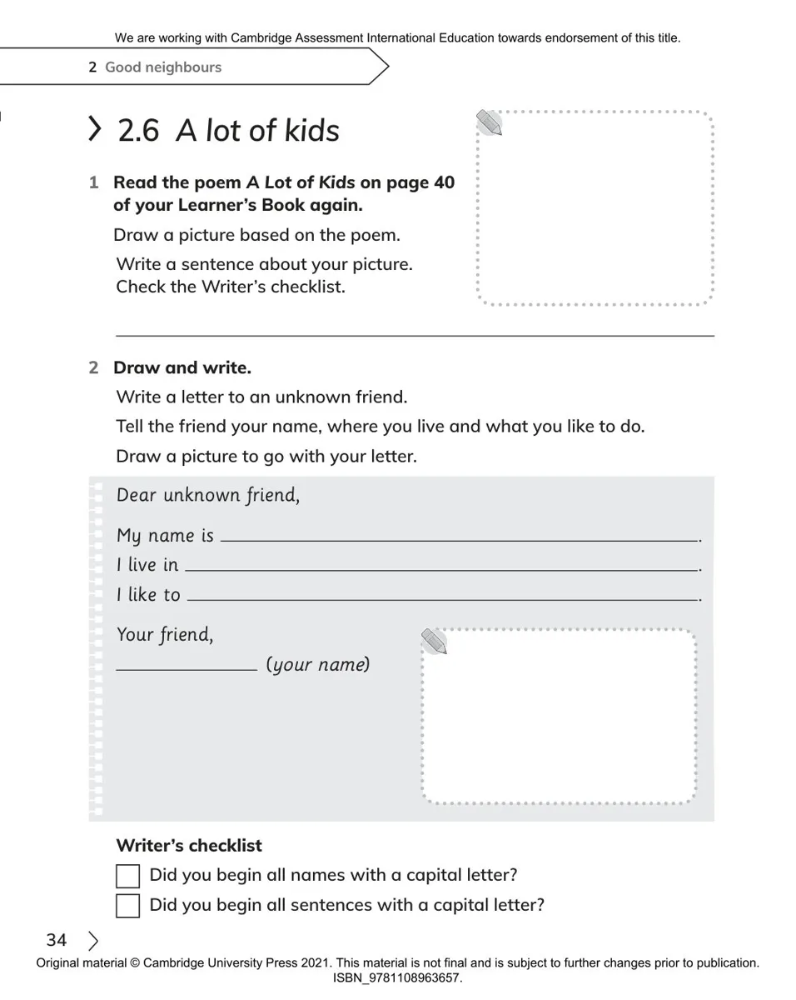
We are working with Cambridge Assessment International Education towards endorsement of this title.
2 Good neighbours
2.6 A lot of kids
1 Read the poem A Lot of Kids on page 40
of your Learner’s Book again.
Draw a picture based on the poem.
Write a sentence about your picture.
Check the Writer’s checklist.
2 Draw and write.
Write a letter to an unknown friend.
Tell the friend your name, where you live and what you like to do.
Draw a picture to go with your letter.
Dear unknown friend,
My name is
.
I live in
.
I like to
.
Your friend,
(your name)
Writer’s checklist
Did you begin all names with a capital letter?
Did you begin all sentences with a capital letter?
34
Original material © Cambridge University Press 2021. This material is not final and is subject to further changes prior to publication.
ISBN_9781108963657.
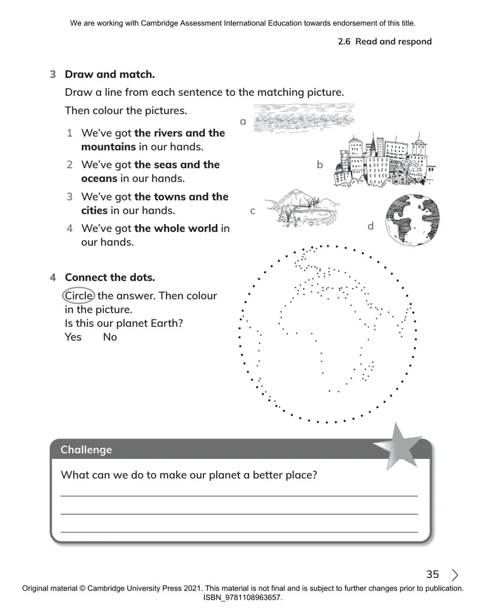
We are working with Cambridge Assessment International Education towards endorsement of this title.
2.6 Read and respond
3 Draw and match.
Draw a line from each sentence to the matching picture.
Then colour the pictures.
a
1 We’ve got the rivers and the
mountains in our hands.
2 We’ve got the seas and the
oceans in our hands.
3 We’ve got the towns and the
cities in our hands.
4 We’ve got the whole world in
our hands.
4 Connect the dots.
Circle the answer. Then colour
in the picture.
Is this our planet Earth?
Yes No
b
c
d
Challenge
What can we do to make our planet a better place?
35
Original material © Cambridge University Press 2021. This material is not final and is subject to further changes prior to publication.
ISBN_9781108963657.
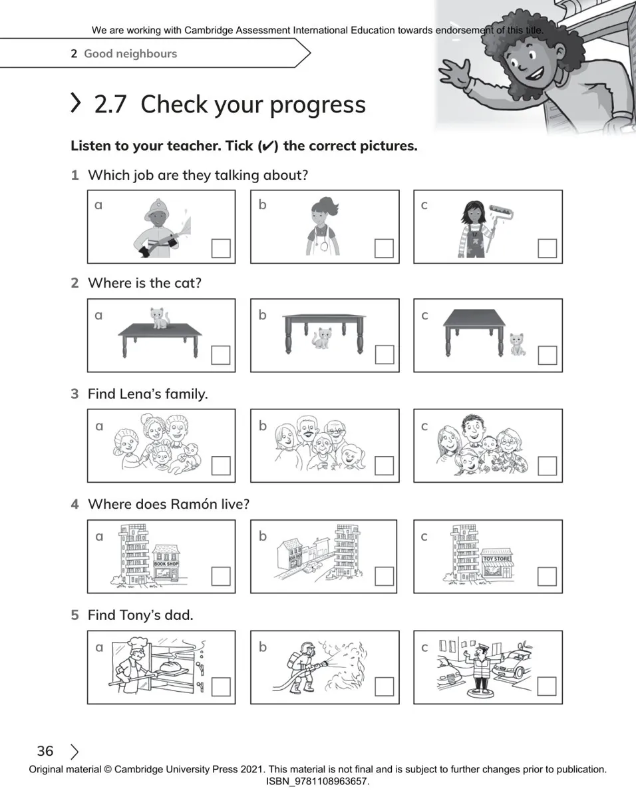
We are working with Cambridge Assessment International Education towards endorsement of this title.
2 Good neighbours
2.7 Check your progress
Listen to your teacher. Tick (✔) the correct pictures.
1Which job are they talking about?
b
a
c
2Where is the cat?
a
b
c
3Find Lena’s family.
a
b
c
4Where does Ramón live?
a
b
c
5Find Tony’s dad.
a
b
c
36
Original material © Cambridge University Press 2021. This material is not final and is subject to further changes prior to publication.
ISBN_9781108963657.
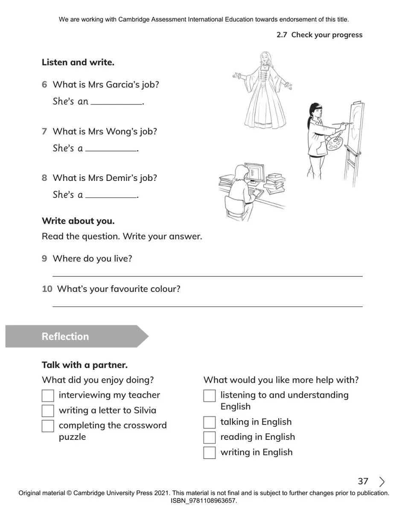
We are working with Cambridge Assessment International Education towards endorsement of this title.
2.7 Check your progress
Listen and write.
6What is Mrs Garcia’s job?
.
She’s an
7What is Mrs Wong’s job?
.
She’s a
8What is Mrs Demir’s job?
.
She’s a
Write about you.
Read the question. Write your answer.
9Where do you live?
10What’s your favourite colour?
Refl ection
Talk with a partner.
What did you enjoy doing?
interviewing my teacher
writing a letter to Silvia
completing the crossword
puzzle
What would you like more help with?
listening to and understanding
English
talking in English
reading in English
writing in English
37
Original material © Cambridge University Press 2021. This material is not final and is subject to further changes prior to publication.
ISBN_9781108963657.
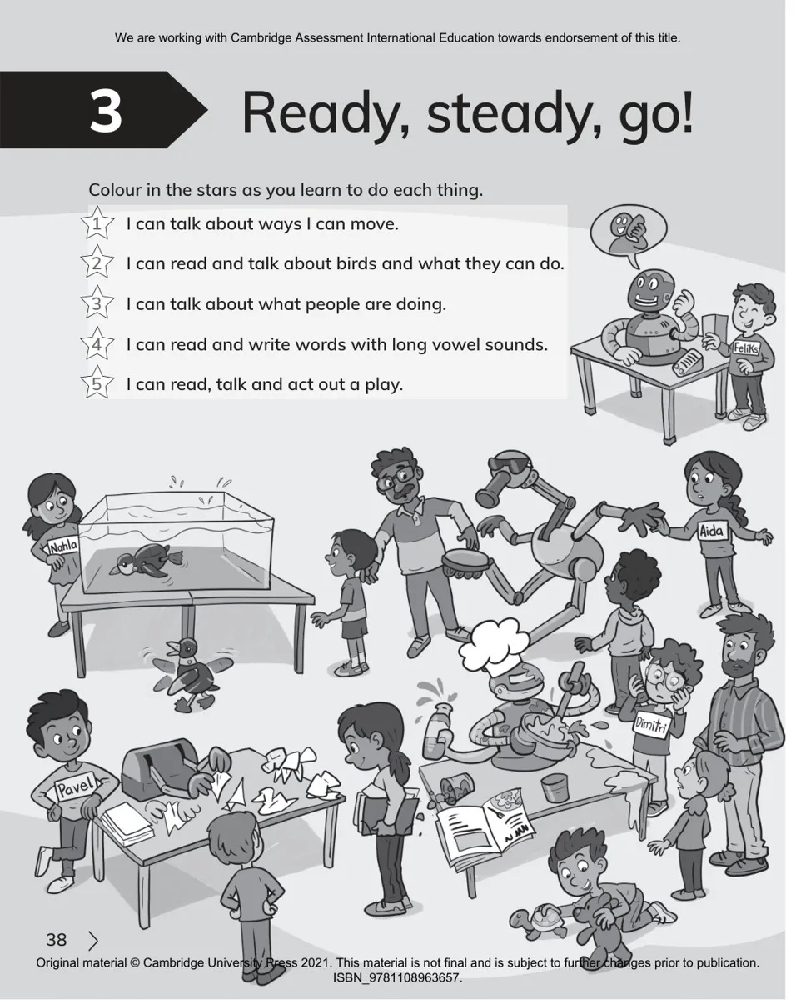
We are working with Cambridge Assessment International Education towards endorsement of this title.
3
Ready, steady, go!
Colour in the stars as you learn to do each thing.
1
I can talk about ways I can move.
2
I can read and talk about birds and what they can do.
3
I can talk about what people are doing.
4
I can read and write words with long vowel sounds.
5
I can read, talk and act out a play.
38
Original material © Cambridge University Press 2021. This material is not final and is subject to further changes prior to publication.
ISBN_9781108963657.
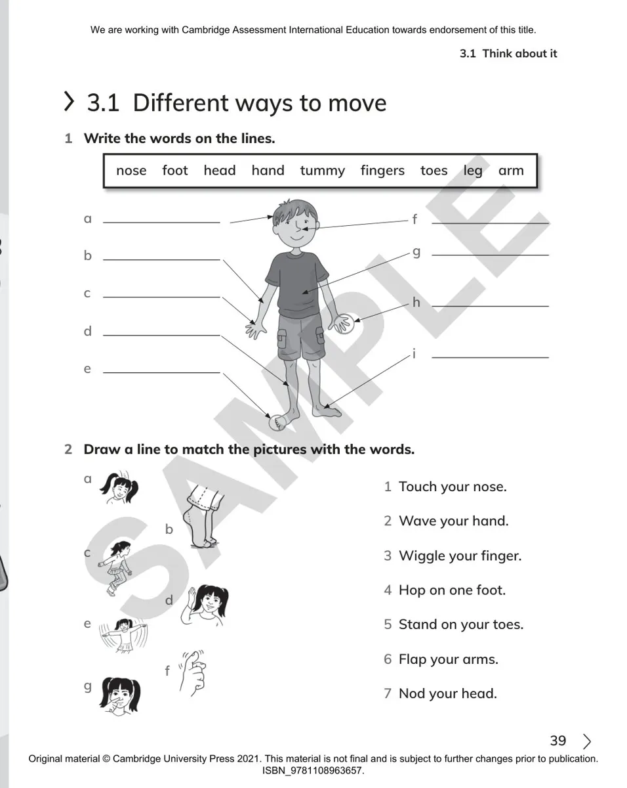
We are working with Cambridge Assessment International Education towards endorsement of this title.
3.1 Think about it
3.1 Different ways to move
1 Write the words on the lines.
nose
foot
head
hand
tummy
fingers
toes
leg
arm
f
g
h
i
a
b
c
d
e
2 Draw a line to match the pictures with the words.
a
1 Touch your nose.
2 Wave your hand.
3 Wiggle your finger.
4 Hop on one foot.
5 Stand on your toes.
6 Flap your arms.
7 Nod your head.
b
c
d
e
g
f
39
Original material © Cambridge University Press 2021. This material is not final and is subject to further changes prior to publication.
ISBN_9781108963657.
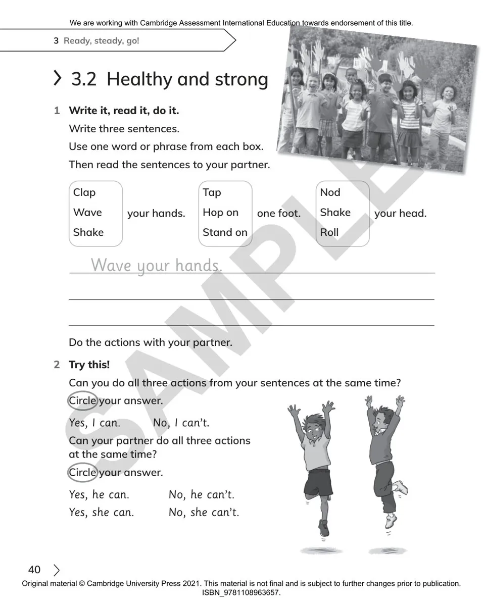
We are working with Cambridge Assessment International Education towards endorsement of this title.
3 Ready, steady, go!
3.2 Healthy and strong
1 Write it, read it, do it.
Write three sentences.
Use one word or phrase from each box.
Then read the sentences to your partner.
Clap
Tap
Wave
Hop on
your hands.
Shake
Stand on
Wave your hands.
Nod
Shake
Roll
one foot.
your head.
Do the actions with your partner.
2 Try this!
Can you do all three actions from your sentences at the same time?
Circle your answer.
Yes, I can.No, I can’t.
Can your partner do all three actions
at the same time?
Circle your answer.
Yes, he can. No, he can’t.
Yes, she can. No, she can’t.
40
Original material © Cambridge University Press 2021. This material is not final and is subject to further changes prior to publication.
ISBN_9781108963657.
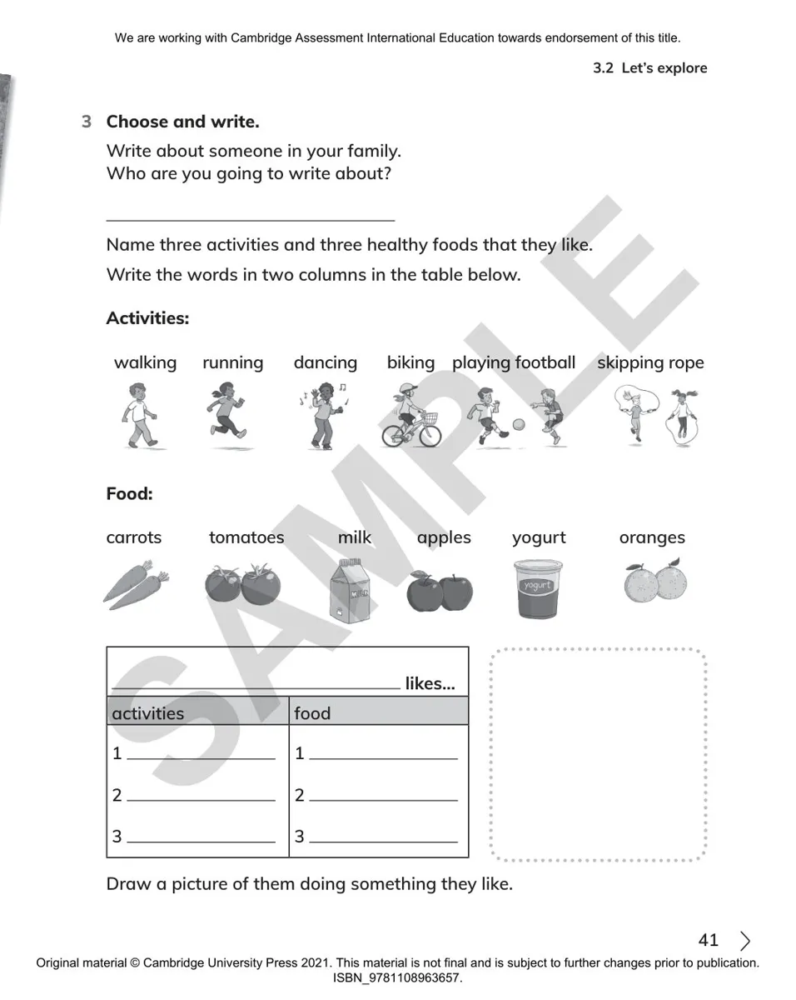
We are working with Cambridge Assessment International Education towards endorsement of this title.
3.2 Let’s explore
3 Choose and write.
Write about someone in your family.
Who are you going to write about?
Name three activities and three healthy foods that they like.
Write the words in two columns in the table below.
Activities:
walking running dancing biking playing football skipping rope
Food:
carrots tomatoes milk apples yogurt oranges
likes...
activities
food
1
1
2
2
3
3
Draw a picture of them doing something they like.
41
Original material © Cambridge University Press 2021. This material is not final and is subject to further changes prior to publication.
ISBN_9781108963657.
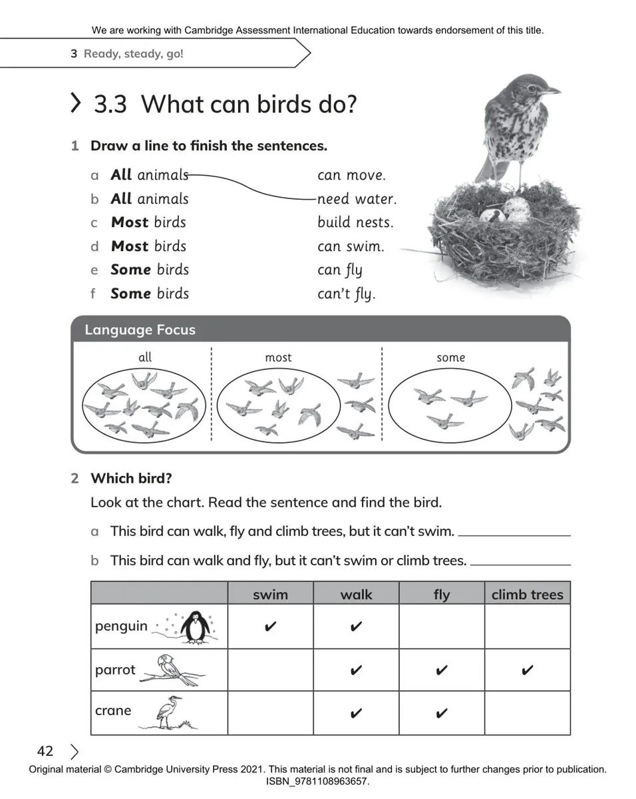
We are working with Cambridge Assessment International Education towards endorsement of this title.
3 Ready, steady, go!
3.3 What can birds do?
1 Draw a line to fi nish the sentences.
aAll animals
can move.
b Allanimals
need water.
c Most birds
build nests.
d Mostbirds
can swim.
e Some birds
can fly
f Some birds
can’t fly.
Language Focus
all
most
some
2 Which bird?
Look at the chart. Read the sentence and find the bird.
a This bird can walk, fly and climb trees, but it can’t swim.
b This bird can walk and fly, but it can’t swim or climb trees.
swim
walk
fly
climb trees
penguin
✔
✔
parrot
✔
✔
✔
crane
✔
✔
42
Original material © Cambridge University Press 2021. This material is not final and is subject to further changes prior to publication.
ISBN_9781108963657.
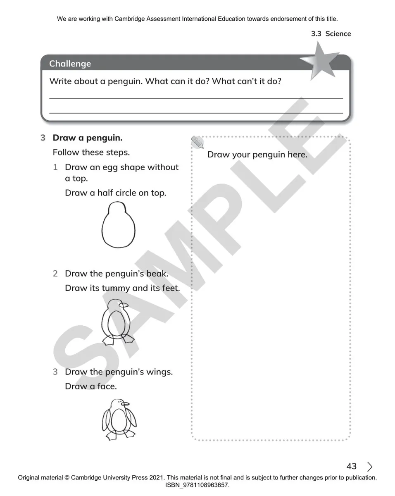
We are working with Cambridge Assessment International Education towards endorsement of this title.
3.3 Science
Challenge
Write about a penguin. What can it do? What can’t it do?
3 Draw a penguin.
Follow these steps.
1 Draw an egg shape without
a top.
Draw a half circle on top.
Draw your penguin here.
2 Draw the penguin’s beak.
Draw its tummy and its feet.
3 Draw the penguin’s wings.
Draw a face.
43
Original material © Cambridge University Press 2021. This material is not final and is subject to further changes prior to publication.
ISBN_9781108963657.
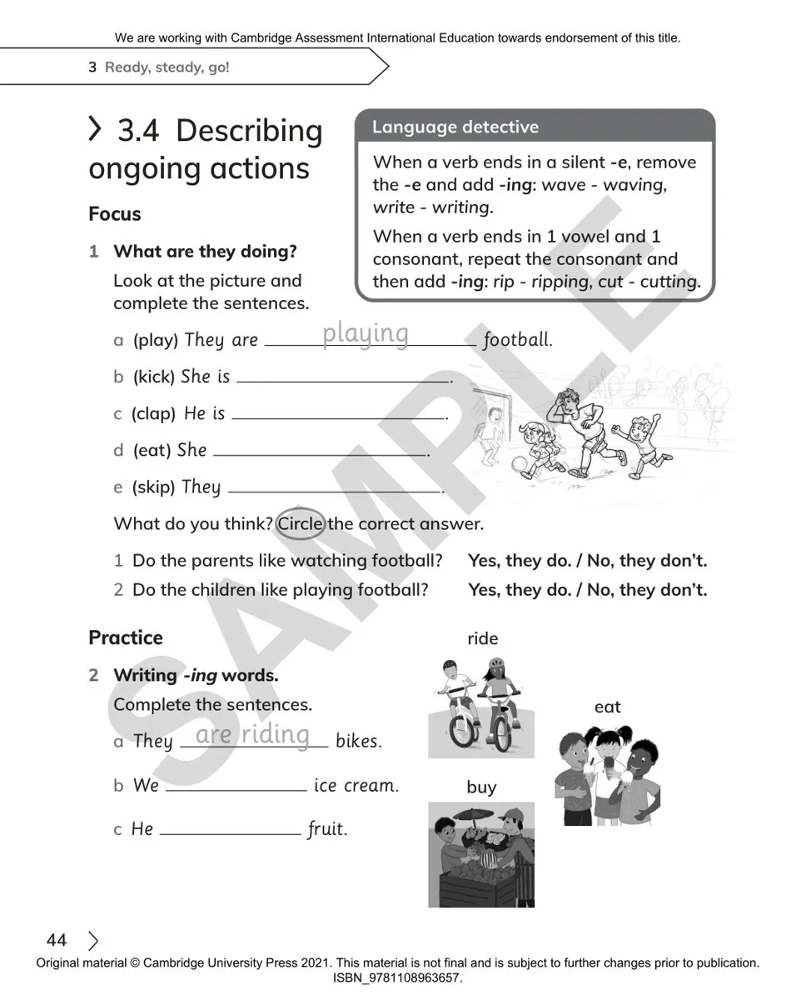
We are working with Cambridge Assessment International Education towards endorsement of this title.
3 Ready, steady, go!
3.4 Describing
ongoing actions
Language detective
When a verb ends in a silent -e, remove
the -e and add -ing: wave - waving,
write - writing.
Focus
When a verb ends in 1 vowel and 1
consonant, repeat the consonant and
then add -ing: rip - ripping, cut - cutting.
1 What are they doing?
Look at the picture and
complete the sentences.
playing
a (play) They are
football.
b (kick) She is
.
c (clap) He is
.
d (eat) She
.
e (skip) They
.
What do you think? Circle the correct answer.
1 Do the parents like watching football? Yes, they do. / No, they don’t.
2 Do the children like playing football? Yes, they do. / No, they don’t.
Practice
ride
2 Writing -ing words.
Complete the sentences.
are riding
a They
bikes.
b We
ice cream.
c He
fruit.
eat
buy
44
Original material © Cambridge University Press 2021. This material is not final and is subject to further changes prior to publication.
ISBN_9781108963657.
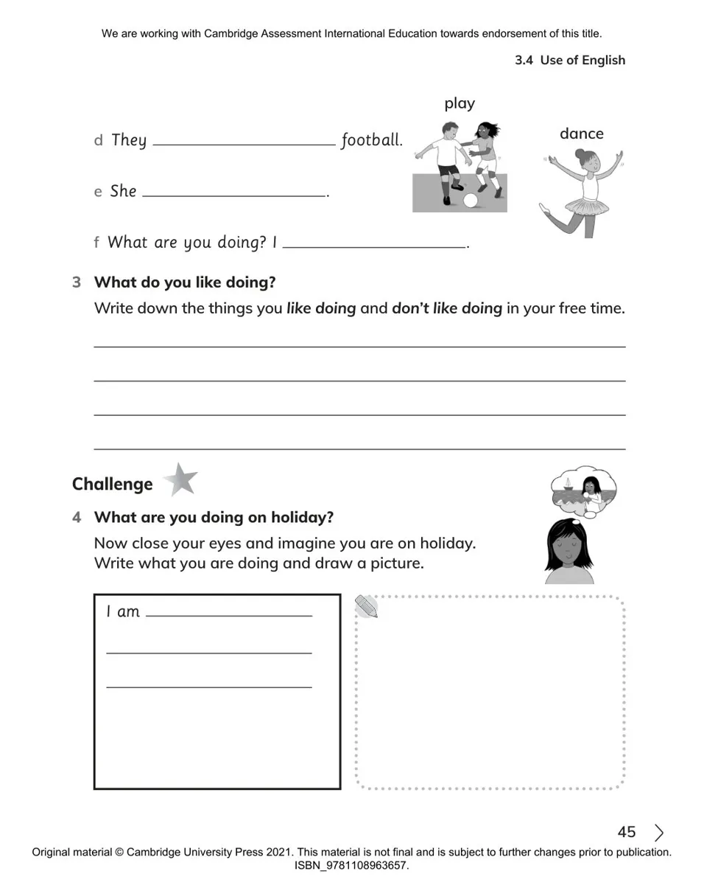
We are working with Cambridge Assessment International Education towards endorsement of this title.
3.4 Use of English
play
dance
d They
football.
e She
.
f What are you doing? I
.
3 What do you like doing?
Write down the things you like doing and don’t like doing in your free time.
Challenge
4 What are you doing on holiday?
Now close your eyes and imagine you are on holiday.
Write what you are doing and draw a picture.
I am
45
Original material © Cambridge University Press 2021. This material is not final and is subject to further changes prior to publication.
ISBN_9781108963657.
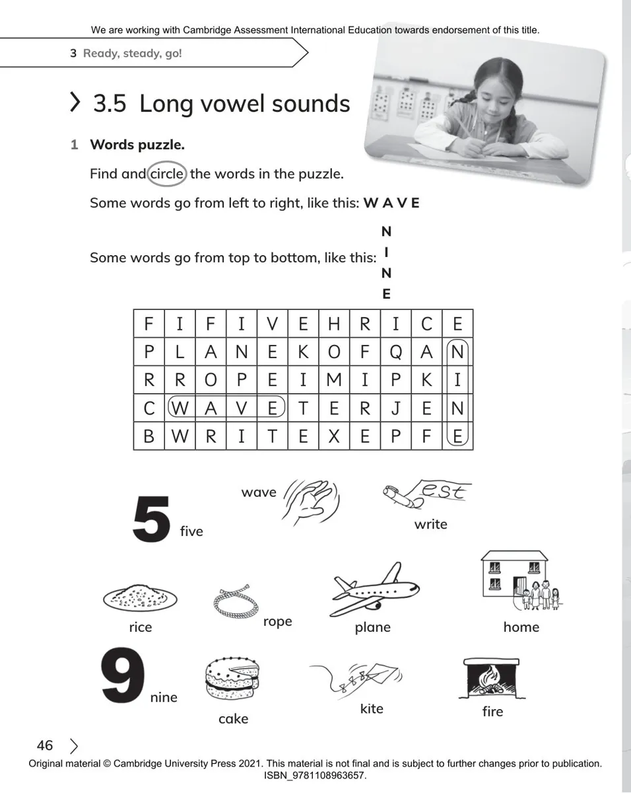
We are working with Cambridge Assessment International Education towards endorsement of this title.
3 Ready, steady, go!
3.5 Long vowel sounds
1 Words puzzle.
Find and circle the words in the puzzle.
Some words go from left to right, like this: W A V E
N
I
N
Some words go from top to bottom, like this:
E
F
I
F
I
V
E
H
R
I
C
E
P
L
A
N
E
K
O
F
Q
A
N
R
R
O
P
E
I
M
I
P
K
I
C
WA
V
E
T
E
R
J
E
N
B
W
R
I
T
E
X
E
P
F
E
wave
write
five
rope
rice
home
plane
nine
kite
fire
cake
46
Original material © Cambridge University Press 2021. This material is not final and is subject to further changes prior to publication.
ISBN_9781108963657.
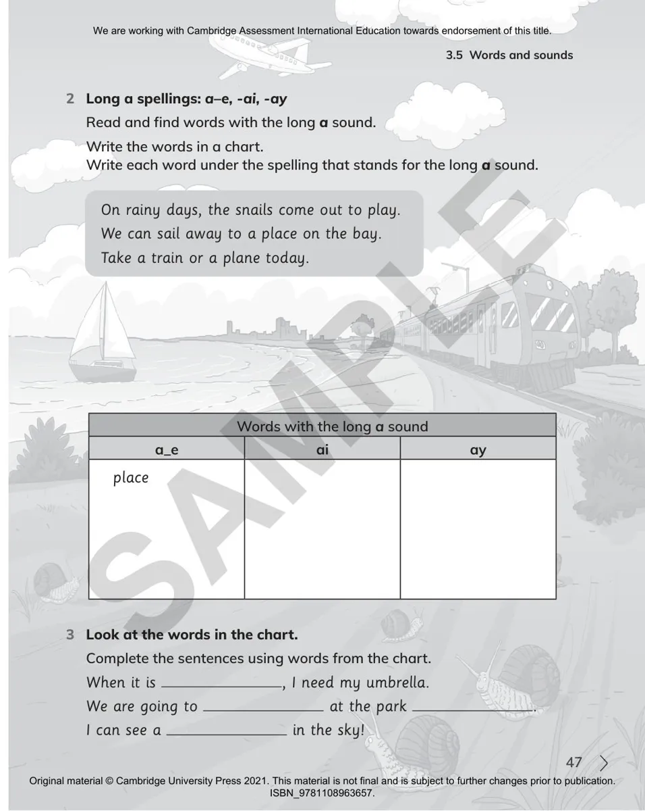
We are working with Cambridge Assessment International Education towards endorsement of this title.
3.5 Words and sounds
2 Long a spellings: a–e, -ai, -ay
Read and find words with the long a sound.
Write the words in a chart.
Write each word under the spelling that stands for the long a sound.
On rainy days, the snails come out to play.
We can sail away to a place on the bay.
Take a train or a plane today.
Words with the long a sound
a_e
ai
ay
place
3 Look at the words in the chart.
Complete the sentences using words from the chart.
When it is
, I need my umbrella.
We are going to
at the park
.
I can see a
in the sky!
47
47
Original material © Cambridge University Press 2021. This material is not final and is subject to further changes prior to publication.
ISBN_9781108963657.
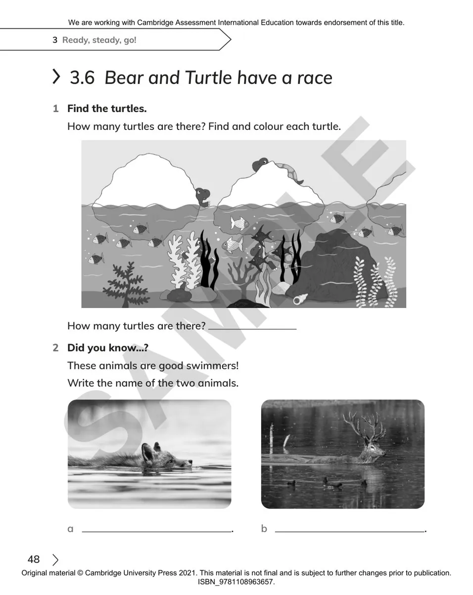
We are working with Cambridge Assessment International Education towards endorsement of this title.
3 Ready, steady, go!
3.6 Bear and Turtle have a race
1 Find the turtles.
How many turtles are there? Find and colour each turtle.
How many turtles are there?
2 Did you know…?
These animals are good swimmers!
Write the name of the two animals.
a
.
b
.
48
Original material © Cambridge University Press 2021. This material is not final and is subject to further changes prior to publication.
ISBN_9781108963657.
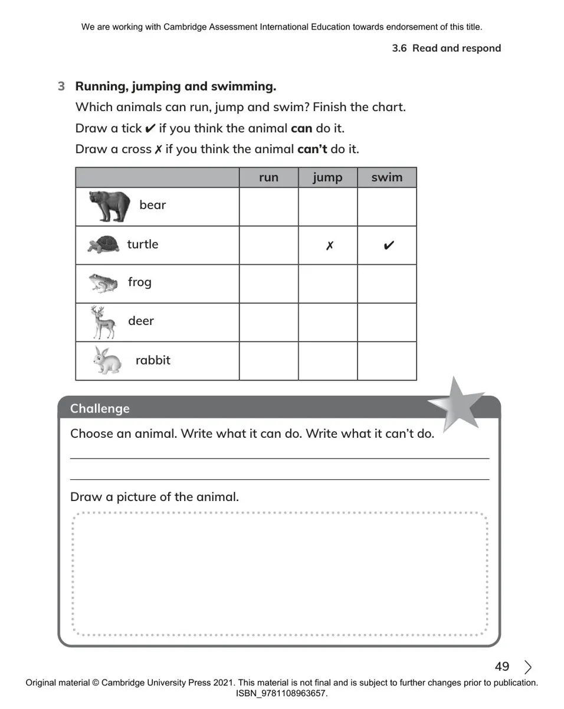
We are working with Cambridge Assessment International Education towards endorsement of this title.
3.6 Read and respond
3 Running, jumping and swimming.
Which animals can run, jump and swim? Finish the chart.
Draw a tick ✔ if you think the animal can do it.
Draw a cross ✗ if you think the animal can’t do it.
run
jump
swim
bear
turtle
✗
✔
frog
deer
rabbit
Challenge
Choose an animal. Write what it can do. Write what it can’t do.
Draw a picture of the animal.
49
Original material © Cambridge University Press 2021. This material is not final and is subject to further changes prior to publication.
ISBN_9781108963657.
We are working with Cambridge Assessment International Education towards endorsement of this title.
3 Ready, steady, go!
3.7 Check your progress
Listen to your teacher. Tick (✔) the correct pictures.
1 Find the correct picture.
b
a
c
2
Find the correct bird.
a
b
c
3
Which food does she not like?
a
b
c
4
What does Lisa like doing?
a
b
c
5
How is Bear feeling?
a
b
c
50
Original material © Cambridge University Press 2021. This material is not final and is subject to further changes prior to publication.
ISBN_9781108963657.
We are working with Cambridge Assessment International Education towards endorsement of this title.
3.7 Check your progress
Listen and write.
6 What is Lucy doing?
7 What is John doing?
Write and do.
8 Finish the sentence using the correct word from the brackets:
in the sky. (plan / plane)
I saw a
9 Write your name on the cake.
Write about you.
Read the question. Write your answer.
10 What do you like doing?
Reflection
Talk with a partner.
What do you enjoy learning about the most?
Which activity would you like to do again, and why?
51
Original material © Cambridge University Press 2021. This material is not final and is subject to further changes prior to publication.
ISBN_9781108963657.
We are working with Cambridge Assessment International Education towards endorsement of this title.
4
The big sky
Colour in the stars as you learn to do each thing.
1
I can talk about shadows.
2
I can do experiments with shadows.
3
I can read and write about the Sun, Earth, Moon and stars.
4
I can read and talk about what people did in the past.
5
I can read and write words with long i sounds.
6
I can read and talk about a make-believe trip to
the Moon.
52
Original material © Cambridge University Press 2021. This material is not final and is subject to further changes prior to publication.
ISBN_9781108963657.
We are working with Cambridge Assessment International Education towards endorsement of this title.
4.1 Think about it
4.1 What do you know about shadows?
1 Label and colour.
sun shadows sky cloud
Write the words on the labels.
Colour the Sun yellow.
Colour the shadows black.
Colour the sky blue.
Colour the cloud grey.
Challenge
Look at the sun in the picture. Look at the shadows.
What time of day is it? Circle the answer.
morning midday evening
How can you tell?
53
Original material © Cambridge University Press 2021. This material is not final and is subject to further changes prior to publication.
ISBN_9781108963657.
We are working with Cambridge Assessment International Education towards endorsement of this title.
4 The big sky
4.2 Light and shadow
1 Read and draw.
Look at these objects and then draw their shadows.
2 Look at the three sundials.
Which sundial do you like best? Circle
your favourite and write a sentence.
Sundial A
Sundial B
Sundial C
I like sundial
best because
.
Challenge
Can you use a sundial on a cloudy day? Why or why not?
3 Make a sundial.
Put the instructions in the right order.
Write the numbers 1, 2, 3, 4 in the sun shapes.
Push a pencil into the clay.
Put a ball of clay on a paper plate.
Mark the shadow in the morning and in the afternoon.
Leave your sundial in a sunny place.
Check your sundial a few times. Where is the shadow?
54
Original material © Cambridge University Press 2021. This material is not final and is subject to further changes prior to publication.
ISBN_9781108963657.
We are working with Cambridge Assessment International Education towards endorsement of this title.
4.2 Let’s explore
4 Draw the shadow at midday.
You will need a small toy or object. Pretend your torch is the Sun.
Hold the torch above the toy, to show the Sun at midday.
Where is the shadow? Is the shadow long or short?
Draw the shadow on the diagram.
5 Draw the shadow in the evening.
Now hold the torch to show the Sun in the evening.
Where is the shadow now? Is the shadow long or short?
Draw the shadow on the diagram.
55
Original material © Cambridge University Press 2021. This material is not final and is subject to further changes prior to publication.
ISBN_9781108963657.
We are working with Cambridge Assessment International Education towards endorsement of this title.
4 The big sky
4.3 The Sun, Earth, Moon and stars
1 Read and write.
Label the Sun, Moon and Earth.
Circle the mistakes in each sentence. Then write the correct sentence.
The first one has been done for you.
a Seven planets circle around the Sun.
Eight planets circle around the Sun.
b Earth is the fourth planet away from the Sun.
c The Moon is at the centre of the solar system.
d We can see the Sun in the night.
e The Sun only gives us coolness and light.
f Without the Earth, there would be no life on the Sun.
56
Original material © Cambridge University Press 2021. This material is not final and is subject to further changes prior to publication.
ISBN_9781108963657.
We are working with Cambridge Assessment International Education towards endorsement of this title.
4.3 Science
2 Finish the picture.
It is night. Draw the Moon in the sky. The boy is holding a torch. Draw the
torch. The sky is dark. Colour the sky black. The boy is shining the torch at
the table.
Draw something on the table. What is it?
Then draw something under the table. What is it?
3 Draw and write.
Draw a picture of each item. Write a sentence for each pair of words.
Sun
Moon
Earth
stars
57
Original material © Cambridge University Press 2021. This material is not final and is subject to further changes prior to publication.
ISBN_9781108963657.
We are working with Cambridge Assessment International Education towards endorsement of this title.
4 The big sky
4.4 Using the past simple
Focus
1 Look at the picture and complete the sentences.
Use the words in the box.
played climbed waved
What did you
do last year?
1 I
the highest
mountain in the world.
2 I
football
in Brazil.
3 I
to the
astronauts in the spaceship.
Practice
2 What did you do?
Write Yes. Then answer the question.
Use verbs from the box.
climbed played waved
a Did you climb Mount Everest?
Yes. I climbed Mount Everest.
b Did you play football in Brazil?
c Did you wave to the astronauts on the spaceship?
58
Original material © Cambridge University Press 2021. This material is not final and is subject to further changes prior to publication.
ISBN_9781108963657.
We are working with Cambridge Assessment International Education towards endorsement of this title.
4.4 Use of English
Challenge
3 Write some questions, then ask a friend.
Write down their answers. Use words from the box.
wave / waved go / went travel / travelled do / did be / was / were
climb / climbed walk / walked watch / watched talk / talked
What did you do yesterday in the morning?
a
b What
yesterday, in the afternoon?
c
yesterday, in the evening?
d
yesterday, at night?
4 What did you do yesterday?
a Who did you help?
b How many people did you talk to?
c What games did you play?
59
Original material © Cambridge University Press 2021. This material is not final and is subject to further changes prior to publication.
ISBN_9781108963657.
We are working with Cambridge Assessment International Education towards endorsement of this title.
4 The big sky
4.5 Long i
1 Find the long i words.
Find and circle six words. They all make the long i sound.
Write the words next to the pictures.
d
f
b
i
t
e
g
r
l
i
g
h
t
e
i
f
s
h
i
n
e
l
i
n
i
g
h
t
q
w
w
r
i
t
e
v
c
m
n
m
k
i
t
e
t
a
b
c
e
2 How many long i words?
Circle the words with long i sounds.
Five white tigers are driving
in a line at night.
How many can you find?
Write the number here.
d
f
60
Original material © Cambridge University Press 2021. This material is not final and is subject to further changes prior to publication.
ISBN_9781108963657.
We are working with Cambridge Assessment International Education towards endorsement of this title.
4.5 Words and sounds
3 Make some compound words.
Take one word from each half of the sun.
Put them together to make a longer word.
sun
shine
sunshine
+
=
a
b
+
=
c
+
=
d
+
=
e
+
=
4 Read and draw.
Draw something that you
Draw something that you
do in the morning.
do in the afternoon.
sun
light
moon
time
day
night
shine
Challenge
Name one thing that you do in the evening.
In the evening, I
.
61
Original material © Cambridge University Press 2021. This material is not final and is subject to further changes prior to publication.
ISBN_9781108963657.
We are working with Cambridge Assessment International Education towards endorsement of this title.
4 The big sky
4.6 Our trip to the Moon
1 Write about the Moon.
What do you know about the Moon? Use the words in the box to help you.
gravity weigh less jump high
1
2
3
What do you know about the Earth?
1
2
3
Challenge
The story on page 74 in the Learner’s Book is make-believe.
Do you think it is possible to go into space on a fi eld trip?
Do you want to go on a fi eld trip to the Moon? Why or why not?
62
Original material © Cambridge University Press 2021. This material is not final and is subject to further changes prior to publication.
ISBN_9781108963657.
We are working with Cambridge Assessment International Education towards endorsement of this title.
4.6 Read and respond
2 Field trip report
Pretend you went on a field
trip to the Moon.
What did you wear on the trip?
Connect the dots to find out.
Start from number 1.
What is it? Unscramble the
word to find out.
e p a c s t u i s
3 Answer questions about your field trip.
a What did you do on the trip?
b What did you see?
63
Original material © Cambridge University Press 2021. This material is not final and is subject to further changes prior to publication.
ISBN_9781108963657.
We are working with Cambridge Assessment International Education towards endorsement of this title.
4 The big sky
4.7 Check your progress
Listen to your teacher. Tick (✔) the correct pictures.
1
The Moon circles the Earth, and the Earth circles the Sun.
a
b
c
2
Find Mei’s shadow.
a
b
c
3
Find the correct picture.
a
b
c
4
What did Tom do yesterday?
a
b
c
5
What did Lucy do yesterday?
a
b
c
64
Original material © Cambridge University Press 2021. This material is not final and is subject to further changes prior to publication.
ISBN_9781108963657.
We are working with Cambridge Assessment International Education towards endorsement of this title.
4.7 Check your progress
Listen and write.
Listen and write the word. Then tick (✔) the correct picture.
6
a
b
7
a
b
Read and write.
8
Read the sentence. Tick (✔) the correct picture.
The boy read a book
about the sky.
a
b
Write about you.
9 Imagine a make-believe trip. Where did you go?
10 What did you do?
Refl ection
Talk with a partner.
What do you do well?
What would you like to learn
more about?
listening to and understanding English
the Sun
talking in English
the Earth
singing in English
the Moon
reading in English
the stars
writing in English
65
Original material © Cambridge University Press 2021. This material is not final and is subject to further changes prior to publication.
ISBN_9781108963657.
We are working with Cambridge Assessment International Education towards endorsement of this title.
5
Let’s measure
Colour in the stars as you learn to do each thing.
1
I can count to 100.
2
I can name and describe shapes.
3
I can measure and say how long something is.
4
I can talk and write about what people did in the past.
5
I can read and write words that sound the same, like one / won and
two / too.
6
I can read, discuss and act out a story.
66
Original material © Cambridge University Press 2021. This material is not final and is subject to further changes prior to publication.
ISBN_9781108963657.
We are working with Cambridge Assessment International Education towards endorsement of this title.
5.1 Think about it
5.1 Using numbers
1 Read and draw.
Read the instructions below.
1
2
3
4
5
6
7
8
9
10
Start at the bottom of the chart.
How to draw a star
• Draw 10 green stars.
• Draw 30 red squares.
• Draw 20 purple triangles.
How many stars are there
altogether?
How many different shapes are there?
67
Original material © Cambridge University Press 2021. This material is not final and is subject to further changes prior to publication.
ISBN_9781108963657.
We are working with Cambridge Assessment International Education towards endorsement of this title.
5 Let’s measure
5.2 Shapes, patterns and numbers
1 Write the shapes.
1
Look at the clues. Then write the
shape words in the crossword.
star
triangle
circle
heart
square
rectangle
2
s
4
3
5
Across
Down
2
1
4
2
5
3
Challenge
What is your favourite shape?
What is your favourite colour?
Draw your favourite shape. Use your favourite colour.
68
Original material © Cambridge University Press 2021. This material is not final and is subject to further changes prior to publication.
ISBN_9781108963657.
We are working with Cambridge Assessment International Education towards endorsement of this title.
5.2 Let’s explore
2 Read and follow the
directions.
Colour all the big
triangles green.
Colour all the
squares yellow.
Colour all the
hearts blue.
Colour all the small
circles purple.
3 Look at the grid above.
Then answer the questions.
a What is the fi fth shape?
Size:
Colour:
Shape:
b What is the tenth shape?
Size:
Colour:
Shape:
c What is the nineteenth shape?
Size:
Colour:
Shape:
d What is the twenty-second shape?
Size:
Colour:
Shape:
e What is the thirty-fourth shape?
Size:
Colour:
Shape:
f What shape is in the third row and third column?
69
Original material © Cambridge University Press 2021. This material is not final and is subject to further changes prior to publication.
ISBN_9781108963657.
We are working with Cambridge Assessment International Education towards endorsement of this title.
5 Let’s measure
5.3 How did people measure long ago?
1 Measuring with your body.
Use your fingers, hands and arms to measure – like the ancient
Egyptians did many years ago!
finger
hand
arm
a How high is your chair?
arms +
fingers
b How wide is your chair?
hands +
fingers
c How long is your pencil?
hands +
fingers
d How wide is your book?
hands +
fingers
wide
high
long
wide
70
Original material © Cambridge University Press 2021. This material is not final and is subject to further changes prior to publication.
ISBN_9781108963657.
We are working with Cambridge Assessment International Education towards endorsement of this title.
5.3 Maths
2 Measuring with a ruler.
Use a centimetre ruler to measure the stamps.
wide
high
a stamp from Mexico
a stamp from Thailand
aHow high is the stamp from Mexico?
centimetres
bHow wide is the stamp from Mexico?
centimetres
cHow high is the stamp from Thailand?
centimetres
dHow wide is the stamp from Thailand?
centimetres
3 Estimate, then measure.
Estimate means look and say what you think.
cm means centimetre.
aEstimate how wide the phone is.
I think the phone is about
cm wide.
bEstimate how high the phone is.
I think the phone is about
cm high.
cNow measure the phone.
cm wide.
The phone is
The phone is
cm high.
71
Original material © Cambridge University Press 2021. This material is not final and is subject to further changes prior to publication.
ISBN_9781108963657.
We are working with Cambridge Assessment International Education towards endorsement of this title.
5 Let’s measure
5.4 Using the past simple (irregular verbs)
Focus
1 Find the past simple verb.
Read the verb. Then follow the line to find the past tense of each verb.
said
eat
look
thought
laughed
think
draw
ate
looked
laugh
saw
make
say
felt
made
see
drew
feel
Practice
2 Look at the picture and complete the questions and answers.
a What did the panda eat this morning?
It
bamboo.
b What
the panda
yesterday?
It ate bamboo.
72
Original material © Cambridge University Press 2021. This material is not final and is subject to further changes prior to publication.
ISBN_9781108963657.
We are working with Cambridge Assessment International Education towards endorsement of this title.
5.4 Use of English
Challenge
3 Choose the correct answer.
Think about the story about Birbal.
Circle the correct answer.
aWhat did Birbal draw?
He drawed / drew / draws
a line.
bWhat did Birbal say to the king?
He says / said, ‘My line is
longer than your line.’
cWhat did the king think / thinks / thought about Birbal’s answer?
He thinks / thought Birbal was very clever.
dDid the king feel cross?
No, he feels / felt happy. The king laughs / laughed.
4 Think about yesterday.
What did you eat yesterday? Write three things.
I ate
.
What did you see yesterday? Write three things.
I
.
Where did you go yesterday?
I
.
73
Original material © Cambridge University Press 2021. This material is not final and is subject to further changes prior to publication.
ISBN_9781108963657.
We are working with Cambridge Assessment International Education towards endorsement of this title.
5 Let’s measure
5.5 Words that sound the same
1 Draw and match.
Language focus
Draw a circle around the number words.
In English, the number word
comes before the size and
colour word.
Then draw a line between each pair of
words that sound the same.
eight
for
two
I won one little
blue apple.
one
won
too
ate
four
2
Write silly sentences.
Use the number words and words that sound the same as the number words.
3
Write the correct words on the lines.
for four
These
frogs are
Annisa’s friend.
too two
Yusuf has two turtles, and Hamza
has
turtles
.
What is missing from each drawing?
Draw it!
Say each sentence three times quickly!
74
Original material © Cambridge University Press 2021. This material is not final and is subject to further changes prior to publication.
ISBN_9781108963657.
We are working with Cambridge Assessment International Education towards endorsement of this title.
5.5 Words and sounds
4 Read Finn’s maths poem.
Then write how old each person is.
My family
Mary is five and Bea is three,
Billy is nine, that’s three times Bea.
In four more years, I’ll be eleven,
That’s much better than being seven.
My grandpa’s sixty, I’m told.
How many years till I’m that old?
5
Mary
Bea
Billy
Grandpa
Challenge
a Finn says, ‘In four more years, I’ll be eleven.’
How old is Finn now?
b Finn says, ‘My grandpa’s sixty, I’m told.
How many years till I’m that old?’ Do the maths!
Answer the question.
5 Draw Finn’s family.
Draw the people in the poem.
Write their ages.
75
Original material © Cambridge University Press 2021. This material is not final and is subject to further changes prior to publication.
ISBN_9781108963657.
We are working with Cambridge Assessment International Education towards endorsement of this title.
5 Let’s measure
5.6 Many ways to count to ten
1 Which character?
King Leopard
Elephant
Water Ox
Read the clues. Write the name of the character.
aThis animal has two horns. It was the second
animal to throw the spear.
bThis animal can walk on two legs. It was the third
animal to throw the spear.
cThis animal is big, heavy and grey. It was the first
animal to throw the spear.
dThis animal is yellow with black spots. This animal said,
‘It’s time to choose a new king.’
eThis animal is small, quiet and clever. It won the contest
and became the new king.
Chimpanzee
Little Antelope
76
Original material © Cambridge University Press 2021. This material is not final and is subject to further changes prior to publication.
ISBN_9781108963657.
We are working with Cambridge Assessment International Education towards endorsement of this title.
5.6 Read and respond
2 Write the missing words.
came very said must
first was new
Use words from the box.
There 1
a contest in the forest.
All the animals 2
.
The king Leopard 3
, ‘Thank you for coming.
You 4
throw this spear and quickly count to ten.
You must say “ten” before the spear hits the ground.
The winner of the contest will be the 5
king.’
The elephant was the 6
to try.
‘I’m 7
big,’ he said. ‘I think I can do it.’
3 Complete the counting patterns.
Counting in twos is a counting pattern. Counting in tens is another
counting pattern. Write the missing numbers in each pattern.
two four six
twelve
ten twenty
forty
Challenge
These counting patterns are more difficult! Can you do them?
twelve ten eight
two
one hundred ninety eighty
fifty
77
Original material © Cambridge University Press 2021. This material is not final and is subject to further changes prior to publication.
ISBN_9781108963657.
We are working with Cambridge Assessment International Education towards endorsement of this title.
5 Let’s measure
5.7 Check your progress
Listen to your teacher. Tick (✔) the correct pictures.
1Find the correct chart.
b
a
c
2Find the correct number.
32
52
62
b
c
a
3Find the correct animal.
a
b
c
4What did Tony buy?
a
b
c
5What did Sarah buy?
a
b
c
78
Original material © Cambridge University Press 2021. This material is not final and is subject to further changes prior to publication.
ISBN_9781108963657.
We are working with Cambridge Assessment International Education towards endorsement of this title.
5.7 Check your progress
Listen and write.
6
How long is Jack’s pencil?
cm
7
Is the elephant loud or quiet?
Read and write.
Finish each sentence using the correct
word from the brackets.
8This cake is
you. (four / for)
9What time is it? It’s
o’clock. (two / too)
Draw and write.
10 Draw an animal. What did you draw?
Refl ection
Talk with a partner.
What is your favourite activity?
What did you enjoy most in this unit?
learning numbers 10–100
learning about words that
sound the same
singing a song about numbers
reading a story about animals in
the forest
What do you want more help with?
learning numbers 10–100
learning about words that
sound the same
singing a song about numbers
reading a story about animals in
the forest
79
Original material © Cambridge University Press 2021. This material is not final and is subject to further changes prior to publication.
ISBN_9781108963657.
We are working with Cambridge Assessment International Education towards endorsement of this title.
6
All about bugs
Colour in the stars as you learn to do each thing.
1
I can read and talk about insects.
2
I can learn about insects.
3
I can say how spiders and insects are similar and different.
4
I can write questions and answer them.
5
I can read and write words with the spelling ee and ea.
6
I can read, discuss and act out a story.
80
Original material © Cambridge University Press 2021. This material is not final and is subject to further changes prior to publication.
ISBN_9781108963657.
We are working with Cambridge Assessment International Education towards endorsement of this title.
6.1 Think about it
6.1 Bugs and other garden animals
1 Draw a line to match the animal to its description.
a It has 4 colourful wings.
bee
b It is yellow and black.
cricket
c It makes a web.
spider
d It lives in the ground.
ant
e It has wings but can’t fly.
worm
f It is an insect that doesn’t have wings.
butterfly
2 Write.
Look for some ants,
a butterfly, some
bees and a worm
in the picture.
Then write about
the picture. Use
above, behind,
or between.
For example: The spider is above the chair.
a The worm is
the butterfly.
b The ants are
the chair and the flowers.
cThe bee is
the flowers.
d The tree is
the chair.
3 Draw two more bees in the picture. Draw a spider on the web.
81
Original material © Cambridge University Press 2021. This material is not final and is subject to further changes prior to publication.
ISBN_9781108963657.
We are working with Cambridge Assessment International Education towards endorsement of this title.
6 All about bugs
6.2 Crickets and other insects
1 Learn about crickets.
Look at three headings in the text about crickets.
There is a sentence missing under each heading.
Find each missing sentence at the bottom of the page. Write it on the line.
Crickets
What does a cricket look like?
A cricket has six legs, two wings and
two antennae.
How do crickets move?
Crickets have wings, but most crickets do
not fl y.
How do crickets communicate?
Crickets sing by rubbing their wings together.
Crickets have different songs with different
meanings.
Other crickets understand their songs.
Crickets jump. Their back legs are very strong.
82
Original material © Cambridge University Press 2021. This material is not final and is subject to further changes prior to publication.
ISBN_9781108963657.
Crickets are different colours and sizes.
We are working with Cambridge Assessment International Education towards endorsement of this title.
6.2 Let’s explore
2 Would it be good to have a pet cricket?
Make a list of reasons why it would be good to have a pet cricket,
and reasons why it would not be good.
Reasons to have a pet cricket
Reasons not to have a pet cricket
It makes me happy.
Crickets don’t like the cold.
3 Draw a cricket in the picture.
83
Original material © Cambridge University Press 2021. This material is not final and is subject to further changes prior to publication.
ISBN_9781108963657.
We are working with Cambridge Assessment International Education towards endorsement of this title.
6 All about bugs
6.3 Ants and spiders
1 How are spiders and ants the same?
Circle the sentences that are true for both spiders and insects.
They have more than four legs.
They have more than four eyes.
They can climb.
They carry their food home.
They have antennae.
They make webs.
2 Complete the Venn diagram.
Write one fact from Activity 1 in each
section of the Venn diagram.
Only true
for ants
True for ants
and spiders
Only true
for spiders
Challenge
How are spiders and humans similar?
How are spiders and humans different?
84
Original material © Cambridge University Press 2021. This material is not final and is subject to further changes prior to publication.
ISBN_9781108963657.
We are working with Cambridge Assessment International Education towards endorsement of this title.
6.3 Science
3 Draw a picture of your very own bug.
Write about your bug.
What is your bug’s name?
What does it look like?
Where does it live?
What does it eat?
Writer’s checklist
Begin each sentence with a capital letter.
Put a full stop at the end of each sentence.
Challenge
Would your own bug make a good indoor or outdoor pet?
Why or why not?
85
Original material © Cambridge University Press 2021. This material is not final and is subject to further changes prior to publication.
ISBN_9781108963657.
We are working with Cambridge Assessment International Education towards endorsement of this title.
6 All about bugs
6.4 Writing questions
Focus
1 Complete the questions.
How many… do What do…
Where do…
a Bee:
butterfl ies eat?
Butterfl y: Pollen
Bee: Me too!
b Bee:
butterfl ies sleep?
Butterfl y: In trees or shrubs.
Bee: Bees sleep in a beehive.
c Bee:
wings
butterfl ies have?
Butterfl y: 4
Bee: Me too!
Practice
2 Write these questions in the correct
word order. Then answer.
a have does many How a spider legs?
b insects smell do How?
c do What eat crickets?
86
Original material © Cambridge University Press 2021. This material is not final and is subject to further changes prior to publication.
ISBN_9781108963657.
We are working with Cambridge Assessment International Education towards endorsement of this title.
6.4 Use of English
Challenge
3 Choose one insect.
Write questions and research
the answers.
ladybird
How many legs does a ladybird have?
a
b What do
?
c How do
?
d Where do
?
4 Write questions to ask a friend.
Use your imagination! One has been done for you.
many legs do spiders have?
a How
b How
?
c Do
?
d What
?
dragonfly
caterpillar
87
Original material © Cambridge University Press 2021. This material is not final and is subject to further changes prior to publication.
ISBN_9781108963657.
We are working with Cambridge Assessment International Education towards endorsement of this title.
6 All about bugs
6.5 Rhyming words, words with long e
1 Complete the crossword puzzle.
Look at the clues. Write the words.
1 f
Across
1
5
2
3e
5 l
4
6
r
7
63
7
Down
1
2
3
4
Challenge
Write some rhyming poems.
The words in the box will help you.
1, 2, 3. I can see a
.
1, 2, 3. There’s a bug on
.
1, 2, 3. There’s a bug in the
.
bee me flea tea knee tree
88
Original material © Cambridge University Press 2021. This material is not final and is subject to further changes prior to publication.
ISBN_9781108963657.
We are working with Cambridge Assessment International Education towards endorsement of this title.
6.5 Words and sounds
2 Make your own new silly version of the poem.
Make sure that the poem rhymes.
A bee and a
had breakfast with
.
The bee bumped his
and went back to
.
knee bread flea red me bed bee head she
Draw a picture for your poem.
89
Original material © Cambridge University Press 2021. This material is not final and is subject to further changes prior to publication.
ISBN_9781108963657.
We are working with Cambridge Assessment International Education towards endorsement of this title.
6 All about bugs
6.6 Little Ant
1 Little Ant’s problem
Think about the story of Little Ant. Read the questions. Write your answers.
a What fell on Little Ant?
b Little Ant asked a mouse, a cat and a dog for help.
Did they help Little Ant?
Why or why not?
2 The solution
Cousin Flea helped Little Ant! Finish the sentences.
Write the past tense of the verb in brackets on the line.
a Cousin Flea
the dog. (bite)
b The dog
the cat. (scare)
c The cat
the mouse. (chase)
d The mouse
the leaf. (lift)
e Little Ant
home to her mother. (run)
90
Original material © Cambridge University Press 2021. This material is not final and is subject to further changes prior to publication.
ISBN_9781108963657.
We are working with Cambridge Assessment International Education towards endorsement of this title.
6.6 Read and respond
3 What happened next?
Little Ant came home to her mother.
She and her mother were very happy.
What do you think they did after this?
What do you think they ate?
What did they say?
Draw a picture.
Challenge
Write sentences to go with your picture.
91
Original material © Cambridge University Press 2021. This material is not final and is subject to further changes prior to publication.
ISBN_9781108963657.
We are working with Cambridge Assessment International Education towards endorsement of this title.
6 All about bugs
6.7 Check your progress
Listen to your teacher. Tick (✔) the correct pictures.
1
Find the correct insect.
a
b
c
2
Where are the animals?
a
b
c
3
Which image is correct?
a
b
c
4
How does a bee hear sounds?
a
b
c
5
Tick (✔) the correct image.
a
b
c
92
Original material © Cambridge University Press 2021. This material is not final and is subject to further changes prior to publication.
ISBN_9781108963657.
We are working with Cambridge Assessment International Education towards endorsement of this title.
6.7 Check your progress
Listen and write.
6 How many eyes does this spider have?
7 What insect makes honey?
Read and write.
8 Circle the three words that rhyme with me.
tea the she tree
9 Is this a picture of an ant or a spider?
10 How do you know?
Refl ection
Talk with a partner.
What is your favourite bug?
Which animal would you most like as a pet?
What was your favourite activity?
What would you like to improve?
listening to and understanding
reading and writing words
English
with long ee spelling
comparing insects and
reading and talking about
spiders
a story
writing and answering questions
93
Original material © Cambridge University Press 2021. This material is not final and is subject to further changes prior to publication.
ISBN_9781108963657.
We are working with Cambridge Assessment International Education towards endorsement of this title.
7
The world around us
Colour in the stars as you learn to do each thing.
1
I can talk about caring for planet Earth.
2
I can learn about plants.
3
I can learn about trees and recycling.
4
I can role-play conversations at a market.
5
I can read and write words with long o spellings.
6
I can read and discuss a biography.
94
Original material © Cambridge University Press 2021. This material is not final and is subject to further changes prior to publication.
ISBN_9781108963657.
We are working with Cambridge Assessment International Education towards endorsement of this title.
7.1 Think about it
7.1 Caring for planet Earth
1 Look at the picture and describe what the people are doing.
Dad
Uncle
Grandma
Mum
Aunt
Marni
Write the name of the person next to each description.
I’m drawing the birds.
I’m picking up the rubbish.
I’m recycling.
We’re planting trees.
I’m watering the trees.
Marni
Dad
Uncle
Aunt
Mum
Grandma
95
Original material © Cambridge University Press 2021. This material is not final and is subject to further changes prior to publication.
ISBN_9781108963657.
We are working with Cambridge Assessment International Education towards endorsement of this title.
7 The world around us
7.2 Plants and flowers
1 Read and answer the questions.
Tick (✔) yes or no for each question.
1 Do green leaves clean the air outside?
2 Do green leaves clean the air inside?
3 Do plants make the air dirty?
4 Do plants need water?
5 Do roots grow tall?
2 Write the labels on the picture.
___ ___ ___ ___ ___ ___
1
___ ___ ___ ___ ___ ___
2
3
___ ___ ___
6
___ ___ ___
___ ___ ___ ___ ___
7
4
5
yes
no
3 Look for the numbers in the picture.
Write the corresponding letters. Do you know what the mystery
sentence says?
Mystery sentence
I ___ ___ ___ ___ ___ h ___ ___ ___ ___ ___ h.
2
1
3
7
5
7
7
6
4
5
96
Original material © Cambridge University Press 2021. This material is not final and is subject to further changes prior to publication.
ISBN_9781108963657.
We are working with Cambridge Assessment International Education towards endorsement of this title.
7.2 Let’s explore
Challenge
Write three things you like about the Earth.
4 Answer the questions.
a What plants and animals do you like best?
b Describe the sky and the weather.
c What can you see, hear, smell and feel outside?
5 Write your own poem.
The Earth is my home.
I love
The sight of
The smell of
The sound of
I will take care of the Earth.
97
Original material © Cambridge University Press 2021. This material is not final and is subject to further changes prior to publication.
ISBN_9781108963657.
We are working with Cambridge Assessment International Education towards endorsement of this title.
7 The world around us
7.3 The importance of trees
1 Read, colour and draw.
Draw a bird’s nest on the tree. Draw two baby birds in the nest.
Draw some green leaves and some cherries on the tree.
Draw a mother bird flying in the sky. Colour the sky blue.
Draw green grass on the ground and three yellow flowers.
Draw a butterfly on a flower.
Draw some roots at the bottom of the tree.
98
Original material © Cambridge University Press 2021. This material is not final and is subject to further changes prior to publication.
ISBN_9781108963657.
We are working with Cambridge Assessment International Education towards endorsement of this title.
7.3 Science
2 Wood from trees.
Trees give us wood. How do people use wood?
.
We use wood to make
.
We use wood to make
We use wood
.
3 Food from trees.
Circle four foods that come from trees.
pear
apple
potatoes
4 How can we save trees?
Circle three ideas that can help.
bread
orange juice
nuts
Challenge
Write one new fact you learned about trees.
99
Original material © Cambridge University Press 2021. This material is not final and is subject to further changes prior to publication.
ISBN_9781108963657.
We are working with Cambridge Assessment International Education towards endorsement of this title.
7 The world around us
7.4 Using this and these, that and those
Focus
1 Look at the picture and complete the sentences.
stem tomatoes leaf flowers
These are
.
This is a
.
What are
these?
What’s this?
Those are
.
That’s a
.
What are
those?
What’s that?
Practice
2 Complete the sentences.
a What’s this?
b What’s that?
carrot
This is a
.
That is a
.
Overset
100
c What are these?
d What are those?
These are
.
Those are
.
Original material © Cambridge University Press 2021. This material is not final and is subject to further changes prior to publication.
ISBN_9781108963657.
We are working with Cambridge Assessment International Education towards endorsement of this title.
7.4 Use of English
Challenge
3 Complete the questions and answers.
What are these?
a
bananas.
b
This a pineapple.
c What are
?
oranges.
d
a watermelon.
4 Play a game with a partner. Guess the sound.
What is making
the sound?
That is a pencil.
101
Original material © Cambridge University Press 2021. This material is not final and is subject to further changes prior to publication.
ISBN_9781108963657.
We are working with Cambridge Assessment International Education towards endorsement of this title.
7 The world around us
7.5 Long o
1 Mystery picture.
Read each word in a shape.
If the word has the long o sound,
colour the shape blue.
If the word has the short o sound,
colour the shape green.
,
If the word has the ow sound in
how, colour the shape brown.
The mystery picture is a brown
.
102
Original material © Cambridge University Press 2021. This material is not final and is subject to further changes prior to publication.
ISBN_9781108963657.
We are working with Cambridge Assessment International Education towards endorsement of this title.
7.5 Words and sounds
2 Find the long o sounds.
Read the story. Circle all the words with the long o sound.
The clever crow
An old crow is looking for water to drink.
He sees a hole in the ground.
At the bottom of the hole, there is some water!
The crow can’t reach the water.
The crow thinks and thinks.
‘I know what to do!’ he says.
There are lots of little stones on the ground.
The crow throws a stone in the hole.
He throws lots of stones in the hole.
Slowly, the hole fills with stones.
The water in the hole gets
higher and higher.
Finally, the crow can reach the water.
He drinks and drinks.
Challenge
Make a sentence with these words.
crow
The
very
clever
old
was
103
Original material © Cambridge University Press 2021. This material is not final and is subject to further changes prior to publication.
ISBN_9781108963657.
We are working with Cambridge Assessment International Education towards endorsement of this title.
7 The world around us
7.6 Wangari Maathai
1 Find the countries.
Wangari was born in Kenya.
She went to school in the
United States and then
Germany. Then she came
back to Kenya.
Find these countries on a
map or globe. Write the
names on this map.
Draw arrows to show the
route Wangari travelled.
2 Unscramble the words.
Put the letters in the correct order. Write the numbers on the picture.
ar e e tt
bo i l ss
c e l h oh
dr e t a ww
104
Original material © Cambridge University Press 2021. This material is not final and is subject to further changes prior to publication.
ISBN_9781108963657.
We are working with Cambridge Assessment International Education towards endorsement of this title.
7.6 Read and respond
3 Write your own autobiography.
An autobiography is the story of your life.
Write your autobiography. Answer the questions.
a Where were you born?
I was born in
.
b Write two interesting things that have happened
to you. How old were you?
When I was
,
(age)
.
,
.
When I was
(age)
.
c What would you like to do when you grow up?
When I grow up, I would like to
.
dDraw a picture of how
you will look when you
are grown up!
105
Original material © Cambridge University Press 2021. This material is not final and is subject to further changes prior to publication.
ISBN_9781108963657.
We are working with Cambridge Assessment International Education towards endorsement of this title.
7 The world around us
7.7 Check your progress
Listen to your teacher. Tick (✔) the correct pictures.
1Who is helping to take care of the earth?
b
a
2Which sign is being described?
b
a
3Which plant is being described?
b
a
c
c
c
4Find the correct picture.
a
b
c
5Find the correct picture.
a
b
c
106
Original material © Cambridge University Press 2021. This material is not final and is subject to further changes prior to publication.
ISBN_9781108963657.
We are working with Cambridge Assessment International Education towards endorsement of this title.
7.7 Check your progress
Listen and write.
6 Which part of a tree helps clean the air?
7 Which part of a tree grows under the ground?
8 Circle the four words that have the long o sound.
hole
hop
pot
go road
rock
crow
Read and write.
9 What is this girl doing to help save trees?
10 What are these boys doing to help save trees?
Reflection
Talk with a partner
What did you do well in this unit?
reading, talking and writing
about caring for the Earth
learning about trees and other
plants
learning about recycling
role-playing a conversation in
the market
reading and discussing a
biography
What would you like more help with?
reading, talking and writing about
caring for the Earth
learning about trees and other
plants
learning about recycling
role-playing a conversation in the
market
reading and discussing a
biography
107
Original material © Cambridge University Press 2021. This material is not final and is subject to further changes prior to publication.
ISBN_9781108963657.
We are working with Cambridge Assessment International Education towards endorsement of this title.
8
Home, sweet home
Colour in the stars as you learn to do each thing.
1
I can talk and write about different kinds of homes.
2
I can talk about things I do at home.
3
I can read about different kinds of homes.
4
I can talk about things in the future, using will.
5
I can read and write words with long u spellings.
6
I can read and discuss informational text.
108
Original material © Cambridge University Press 2021. This material is not final and is subject to further changes prior to publication.
ISBN_9781108963657.
We are working with Cambridge Assessment International Education towards endorsement of this title.
8.1 Think about it
8.1 Different kinds of homes
1 Write and draw.
Answer the questions.
Look at the Picture Dictionary on page 173 of the Learner’s Book for ideas.
a Can you think of an animal that lives in trees?
b Can you think of an animal that lives in a hole?
c Can you think of an animal that lives in a shell?
d Can you think of an animal that lives near water?
2 Write your own version of the poem.
Look at the poem in the Learner’s Book on page 131. Work with a partner.
Your poem can be about homes for animals or homes for things!
109
Original material © Cambridge University Press 2021. This material is not final and is subject to further changes prior to publication.
ISBN_9781108963657.
We are working with Cambridge Assessment International Education towards endorsement of this title.
8 Home, sweet home
8.2 Inside a home
hall
bedroom
bathroom
kitchen
garden
1 Where do you do these things?
a Where do you play?
b Where do you brush
your teeth?
2 Join the dots.
Draw lines to join the dots 1–30. Then colour the house.
4
3
1
Write these words next to the things:
19
6
5
2
roof wall door window
c Where do you sleep?
d Where do you eat
your breakfast?
26
7
8
17
18
21
25
24
10
9
11
29
30
23
12 131415
16
22
110
Original material © Cambridge University Press 2021. This material is not final and is subject to further changes prior to publication.
ISBN_9781108963657.
20
We are working with Cambridge Assessment International Education towards endorsement of this title.
8.2 Let’s explore
3 Tick (✔) yes or no.
Do you help out at home?
Put a tick (✔) to show which things you do or don’t do.
Ways to help
Ways to help
yes
no
yes
no
out at home
out at home
set the table
put dishes in the sink
tidy my room
put my clothes away
make my bed
sweep the floor
Challenge
What is your favourite way to help at home?
4 Read the following riddles.
Answer the questions using words from the box.
a You sit on me. What am I?
b I light up the room. What am I?
c I keep food cold. What am I?
d You sit around me. You put your food on me. What am I?
5 Write your own riddles.
Think of some things you might have in a house.
Write your own riddles for these things.
table
lamp
chair
shower
refrigerator
sink
111
Original material © Cambridge University Press 2021. This material is not final and is subject to further changes prior to publication.
ISBN_9781108963657.
We are working with Cambridge Assessment International Education towards endorsement of this title.
8 Home, sweet home
8.3 Homes around the world
1 Where can you fi nd these homes?
Read the country name under each photo.
Then find the country on a map. Answer the questions.
Adobe house in Ghana
Stilt house in Borneo
Which country is furthest from where you live?
Which country is nearest to where you live?
2 Which one?
Write the answer on the line: adobe house, stilt house or cave house.
a Which home is built above water?
b Which home is made of mud?
c Which home is made of rock?
Challenge
Which home is the strongest?
Why?
Cave house in Turkey
112
Original material © Cambridge University Press 2021. This material is not final and is subject to further changes prior to publication.
ISBN_9781108963657.
We are working with Cambridge Assessment International Education towards endorsement of this title.
8.3 Geography
3 Read and draw the best house for each person.
I live somewhere
very hot in the
summer and very
cold in the winter.
This house is
.
I live somewhere
very dry.
This house is
.
I live in a big city.
This house is
.
I live somewhere
where there is water
everywhere.
This house is
.
113
Original material © Cambridge University Press 2021. This material is not final and is subject to further changes prior to publication.
ISBN_9781108963657.
We are working with Cambridge Assessment International Education towards endorsement of this title.
8 Home, sweet home
8.4 Using future form will
Focus
1 Match the characters to their dream homes.
Finish the sentences.
My dream home will
have
.
My dream home will
have
.
My dream home will
have
.
114
Original material © Cambridge University Press 2021. This material is not final and is subject to further changes prior to publication.
ISBN_9781108963657.
We are working with Cambridge Assessment International Education towards endorsement of this title.
8.4 Use of English
Practice
2 Read and circle the correct one.
What will the playground have?
It 1 has / will have two slides. One 2 is / will be
very curvy, the other one 3 will have / will be
very high. The playground 4 does / will have
a rope ladder and a bridge. Oh, and it
5 has / will have lots of swings so lots of
children can swing at the same time.
3 Look at the picture and complete the sentences.
Now I have three seeds. In a few weeks,
three plants
I will have
.
Now I have four eggs. In a few months,
I will have
.
Now I have a messy room. In a few minutes,
I
.
Challenge
4 Draw a picture and write about your dream home.
slide
ladder
swimming pool
zoo
balloon
spaceship
lift
My dream home will have
115
Original material © Cambridge University Press 2021. This material is not final and is subject to further changes prior to publication.
ISBN_9781108963657.
We are working with Cambridge Assessment International Education towards endorsement of this title.
8 Home, sweet home
8.5 Long u
1 Crossword puzzle.
Look at the clues. Write the words.
Across
3
6
7
8
1
t
2
f
3
4
s
5
c
w
h
7
Down
1
2
4
5
6
8
Challenge
Most of the words have the long u sound like in you.
Two words have a short sound like in look. Write the words.
116
Original material © Cambridge University Press 2021. This material is not final and is subject to further changes prior to publication.
ISBN_9781108963657.
We are working with Cambridge Assessment International Education towards endorsement of this title.
8.5 Words and sounds
2 Words with the long u sound.
Draw a line under each word that has the long u sound.
Circle the letters that make the long u sound.
The huge blue goose flew to the moon.
3 My favourite room.
What is your favourite room in your home?
.
Draw a picture of the room. Draw things in the room.
Write the words next to the things you draw.
Look at page 168 of the Picture Dictionary in the Learner’s Book.
You will find some words to help you.
117
Original material © Cambridge University Press 2021. This material is not final and is subject to further changes prior to publication.
ISBN_9781108963657.
We are working with Cambridge Assessment International Education towards endorsement of this title.
8 Home, sweet home
8.6 Where do animals build homes?
1 Comparing animal homes
Read the text on pages 140 to 142 in the Learner’s
Book to find the answers.
Write B (beaver), R (rabbit) or T(termite).
a Whose home is under the ground?
b Whose home is under and above the ground?
c Whose home is in a pond?
d Whose home has special rooms for babies
or eggs?
e Whose home is made with branches?
f Whose home is made just of mud?
2 Animal enemies.
‘When a rabbit sees a fox or other
enemy, it stamps on the ground
with its back foot.’
1 What does the word enemy mean
in this sentence?
Tick (✔) the correct answer.
a an animal with a long tail
b an animal that eats rabbits
c an animal that lives above ground
2 Name an animal that is an enemy of a beaver.
3 Name an animal that is an enemy of a mouse.
118
Original material © Cambridge University Press 2021. This material is not final and is subject to further changes prior to publication.
ISBN_9781108963657.
We are working with Cambridge Assessment International Education towards endorsement of this title.
8.6 Read and respond
3 Picture quiz
Look at pages 140 to 142 of the Learner’s Book.
a How many rabbits (babies and grown-ups) can you see
in the picture of the rabbit home?
b How many underwater doors can you see in the picture
of the beaver home?
c Which animal home looks most like a beehive house?
4 A rabbit poem
A bunny is another word for a rabbit.
When a bunny pricks up its ears, that means it puts its ears straight up.
Write the missing words in this poem. Use words from the box.
ground bunny hole jumps sound
Here is a 1
with ears so funny.
And here is its 2
in the ground.
When a 3
it hears, it pricks up its ears.
And 4
in its hole in the 5
.
119
Original material © Cambridge University Press 2021. This material is not final and is subject to further changes prior to publication.
ISBN_9781108963657.
We are working with Cambridge Assessment International Education towards endorsement of this title.
8 Home, sweet home
8.7 Check your progress
Listen to your teacher. Tick (✔) the correct pictures.
1 Which room is being described?
b
a
2 Which is Jill’s tree house?
a
3 What do you need to do?
a
c
b
c
b
c
4 Where will Nina live?
a
b
c
5 Where does Ahmed live?
a
b
c
120
Original material © Cambridge University Press 2021. This material is not final and is subject to further changes prior to publication.
ISBN_9781108963657.
We are working with Cambridge Assessment International Education towards endorsement of this title.
8.7 Check your progress
Listen and write.
6 Listen to the clues. Put the letters in the right order to make
the name of the animal. b i b r t a
Read and write.
Put the letters in the right order to make the word.
7
8
t
f
bue
s
o
o
r
9
oo
mn
10What would you like in your playground? Choose two things.
Complete the sentences.
slide
ladder
swing
seesaw
I’d like a
.
I’d
too.
Reflection
Talk with a partner.
What are you good at?
talking and writing about different
kinds of homes
talking about rooms and furniture in
a home
talking about things we do at home
reading about different kinds of home
121
Original material © Cambridge University Press 2021. This material is not final and is subject to further changes prior to publication.
ISBN_9781108963657.
What would you like more help with?
listening to and understanding
English
talking in English
We are working with Cambridge Assessment International Education towards endorsement of this title.
9
Let’s explore the city!
Colour in the stars as you learn to do each thing.
1
I can talk about city things and places.
2
I can use describing words.
3
I can follow and give directions.
4
I can talk and write about the past, present and future.
5
I can use opposite words.
6
I can read and discuss a story.
122
Original material © Cambridge University Press 2021. This material is not final and is subject to further changes prior to publication.
ISBN_9781108963657.
We are working with Cambridge Assessment International Education towards endorsement of this title.
9.1 Think about it
9.1 Things in a city
1 Follow and write.
Where are Malik and his friends going?
Follow the lines to find out.
Then complete the sentences using
phrases below.
Malik
Zak
Anil
Eva
likes riding in a helicopter
likes visiting the library
likes looking at the sharks
likes riding the underground
.
Malik
.
Zak
.
Anl
.
Eva
Malik: I like ice cream!
You:
Malik: I like watching TV!
You:
Malik: I like singing!
You:
2 So do I!
Do you like the same things as Malik?
If you like it, write So do I!
If you don’t like it, write I don’t!
123
Original material © Cambridge University Press 2021. This material is not final and is subject to further changes prior to publication.
ISBN_9781108963657.
Language detective
Really
I like ice cream. This means you
enjoy ice cream.
I really like chocolate. This mean
you like chocolate a lot!
We are working with Cambridge Assessment International Education towards endorsement of this title.
9 Let’s explore the city!
9.2 At the aquarium
1 Word search puzzle.
Colour the animal picture clues.
Do the word search.
J
S
E
A
H
O
R
S
E
A
N
E
A
S
H
A
R
K
S
T
F
E
L
D
O
D
U
E
E
L
U
Q
E
L
O
J
A
B
T
I
D
B
T
U
R
T
L
E
L
M
M
B
O
C
T
O
P
U
S
A
E
M
V
R
J
F
I
O
M
T
P
E
N
G
U
I
N
S
W
O
U
L
U
Y
U
G
C
J
H
E
A
L
L
I
G
A
T
O
R
I
124
Original material © Cambridge University Press 2021. This material is not final and is subject to further changes prior to publication.
ISBN_9781108963657.
We are working with Cambridge Assessment International Education towards endorsement of this title.
9.2 Let’s explore
2 Write about a mystery animal.
Choose one of the animals in the picture below. Then answer the
questions. The words in the box may help you.
What is it like?
What does it look like?
What do the body parts look like?
What do the body parts do?
What can your mystery animal do?
How does it move?
My mystery animal is
What is your mystery animal?
.
scary
amazing
big
dangerous
clumsy
little
scary
beautiful
fast
gentle
graceful
huge
strange
Original material © Cambridge University Press 2021. This material is not final and is subject to further changes prior to publication.
ISBN_9781108963657.
We are working with Cambridge Assessment International Education towards endorsement of this title.
9 Let’s explore the city!
9.3 Going places
1 Follow the route to the dinosaur museum.
Start on the ‘X’. Walk to the library. Draw some books in the library.
Then walk straight ahead to the traffic light. The light says 'Go!' Colour
the light green.
Turn right and walk one block to the pet shop. Draw some pets in the shop.
Walk straight ahead past the bus stop. Turn left to the dinosaur museum.
Draw some dinosaurs!
2 Now write instructions to get to a new place.
Start on the ‘X’. Walk
Draw some swings and a slide in the park!
126
Original material © Cambridge University Press 2021. This material is not final and is subject to further changes prior to publication.
ISBN_9781108963657.
We are working with Cambridge Assessment International Education towards endorsement of this title.
9.3 Social studies
3 Make a menu.
Make a menu for your café. What food and drinks will you have?
Write them on your menu. You will find some words to help you
in the Picture Dictionary in the Learner’s Book (page 170).
4 What would you like to eat?
Write what you say to the waiter. Choose something from your menu!
Waiter:
Would you
like something
to eat?
Can I
?
127
Original material © Cambridge University Press 2021. This material is not final and is subject to further changes prior to publication.
ISBN_9781108963657.
We are working with Cambridge Assessment International Education towards endorsement of this title.
9 Let’s explore the city!
9.4 The past, present and future
Focus
1 Look at the pictures. Then read and complete the poem using the
words from the box.
For each line, choose a verb that begins with same letter as the noun.
Will you write the verb in the past, present, or future?
build
dance
catch
talk
wave
run
At the zoo
What will you do when you go to the zoo?
build
with a bee.
I will
I will play c
with a cow.
What are you doing now at the zoo?
I am
with a duck.
I am
with a turtle.
What did you do yesterday at the zoo?
I
with a rabbit.
I
to a whale.
128
Original material © Cambridge University Press 2021. This material is not final and is subject to further changes prior to publication.
ISBN_9781108963657.
We are working with Cambridge Assessment International Education towards endorsement of this title.
9.4 Use of English
Practice
2 Complete the questions and match them to the answers.
Then write an example of what you will do.
c
a What will you
at the zoo.
b What will you
at the swimming pool?
c
What will you
at the museum?
dWhat will you
at the market?
a I will buy some bananas.
b I will see my favourite dinosaur.
Challenge
3 Think of the opposite.
In the future…
aA: I will go to the Moon.
will
won’t
B: I
go to the Moon. I
go to Mars.
bA: I
go to the countryside.
B: I
.
cA: I will live in a cave.
B:
.
c I will wave to the animals.
d I will jump in the water.
129
Original material © Cambridge University Press 2021. This material is not final and is subject to further changes prior to publication.
ISBN_9781108963657.
We are working with Cambridge Assessment International Education towards endorsement of this title.
9 Let’s explore the city!
9.5 Opposites
1 Opposites
Look at the words on the left. Do you know their opposites?
Follow the lines to check your answers.
up
weak
right
cold
lost
down
strong
found
low
high
hot
wrong
2 Change the picture.
Read the instructions. Change the picture!
Anna’s hair is short. Make it long.
Anna is frowning. Make her smile.
It is day. Make it night.
Anna’s boots are clean.
Make them dirty.
130
Original material © Cambridge University Press 2021. This material is not final and is subject to further changes prior to publication.
ISBN_9781108963657.
We are working with Cambridge Assessment International Education towards endorsement of this title.
9.5 Words and sounds
3 Match the -ly words to a picture.
Then complete the sentences.
Sometimes more than one answer is possible.
slowly quickly loudly quietly happily sadly angrily
aShe’s running for the bus. She’s running
.
bHe doesn’t want to go to school today. He’s walking
.
cHer team scored a goal. She’s shouting
.
dThe other team scored a goal. She’s shouting
.
eThe baby’s asleep. He’s talking
.
f
She won the prize. She’s smiling
.
gShe lost the prize. She’s sighing
.
131
Original material © Cambridge University Press 2021. This material is not final and is subject to further changes prior to publication.
ISBN_9781108963657.
We are working with Cambridge Assessment International Education towards endorsement of this title.
9 Let’s explore the city!
9.6 City Mouse and Country Mouse
1 Write the words.
Put the letters in the correct order. Write the words on the lines.
Circle the things that you usually find in the city.
a p o s h
b f é a c
c b l i n g i d u
d w o l
e e e b s
f a x i t
Challenge
The story is a fable. A fable is a special kind of story where we learn
something. What do we learn from this story? Tick (✔) the best answer.
Mice are very silly.
We like the places that we know best.
The city is more scary than the countryside.
132
Original material © Cambridge University Press 2021. This material is not final and is subject to further changes prior to publication.
ISBN_9781108963657.
We are working with Cambridge Assessment International Education towards endorsement of this title.
9.6 Read and respond
2 Cindy or Callie?
Write Cindy or Callie next to each sentence.
a A cat scared her.
b An owl scared her.
c She liked the city better than the country.
d She like the country better than the city.
3 Mystery picture.
Join the dots. Start from number 1.
What animal is this?
Does it live in the city or the countryside?
Challenge
Would you like to be the city mouse or the country mouse? Why?
133
Original material © Cambridge University Press 2021. This material is not final and is subject to further changes prior to publication.
ISBN_9781108963657.
We are working with Cambridge Assessment International Education towards endorsement of this title.
9 Let’s explore the city!
9.7 Check your progress
Listen to your teacher. Tick (✔) the correct pictures.
1 What does the boy want?
b
a
c
2 Where is the boy?
a
b
c
3 What does the girl want to eat?
a
b
4 What does the boy want to drink?
a
b
5 Where does the woman want to go?
a
b
c
c
c
134
Original material © Cambridge University Press 2021. This material is not final and is subject to further changes prior to publication.
ISBN_9781108963657.
We are working with Cambridge Assessment International Education towards endorsement of this title.
9.7 Check your progress
Read and write.
6Circle the opposite of the word sit.
chair
sat
stand
7
8
Where is the girl?
What is she doing?
Reflection
Talk with a partner
What did you enjoy doing in this unit?
role-playing shopping
role-playing ordering food in
a café
using describing words, such
as quickly
practicing giving and following
directions
using opposite words
reading and discussing a story
about the differences in the city
and the countryside
Where are these girls?
What are they doing?
What would you like more help with?
role-playing shopping
role-playing ordering food in
a café
using describing words, such
as quickly
practicing giving and following
directions
using opposite words
reading and discussing a story
about the differences in the city
and the countryside
135
Original material © Cambridge University Press 2021. This material is not final and is subject to further changes prior to publication.
ISBN_9781108963657.